Artifact boxes
Bounding boxes around human-made hardware in every positive crop. Orange = high confidence, blue = medium, magenta = low. Red cross = catalog nominal position.
Apollo 11 LM descent stage apollo11_lm
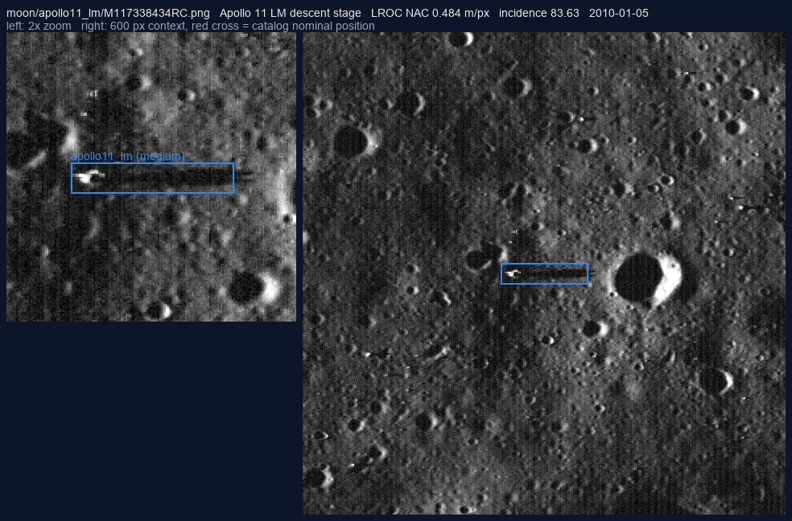
| object | x_min | y_min | x_max | y_max | w | h | shadow | conf | note |
|---|
| apollo11_lm | 305 | 1238 | 405 | 1256 | 101 | 19 | yes | medium | near-terminator frame (incidence 83.6): bright point with a 75 px shadow east at the position predicted independently by terrain matches from two other frames |
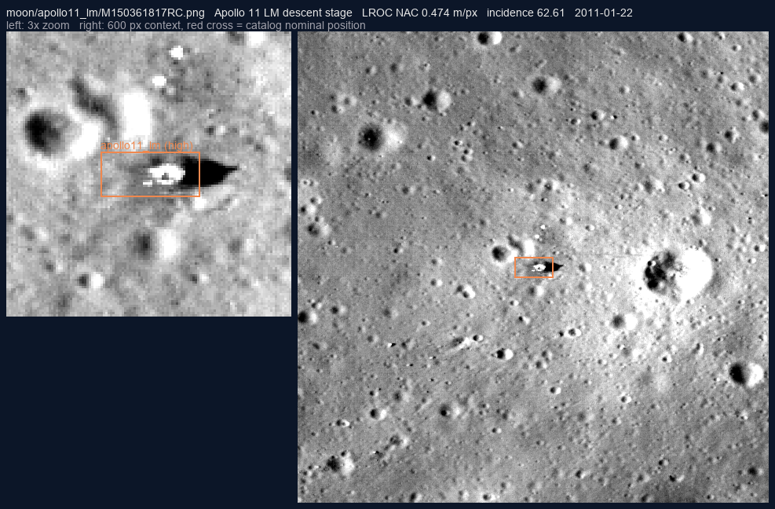
| object | x_min | y_min | x_max | y_max | w | h | shadow | conf | note |
|---|
| apollo11_lm | 1597 | 1165 | 1638 | 1183 | 42 | 19 | yes | high | located by terrain match from M177481212RC then by eye: bright body x1600-1615 with 20 px shadow east; 590 px east of nominal |
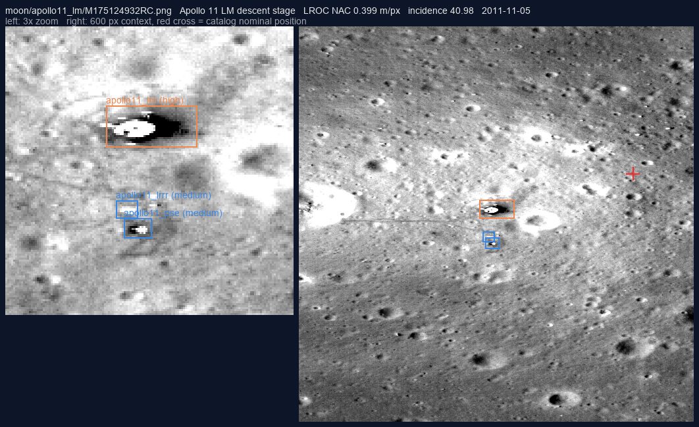
| object | x_min | y_min | x_max | y_max | w | h | shadow | conf | note |
|---|
| apollo11_lm | 795 | 1068 | 840 | 1088 | 46 | 21 | yes | high | verified against NASA's labeled release of this frame (science.nasa.gov Apollo 11 landing site); bright body x797-820 with black shadow x820-838 to the east; 217 px west of the nominal crop centre |
| apollo11_lrrr | 800 | 1116 | 810 | 1124 | 11 | 9 | no | medium | small bright bar 42 px south of the LM; matches the LRRR callout in NASA's labeled release |
| apollo11_pse | 804 | 1125 | 817 | 1134 | 14 | 10 | yes | medium | bright dot 52 px south-southeast of the LM, below-right of the LRRR; matches the PSE callout in NASA's labeled release |
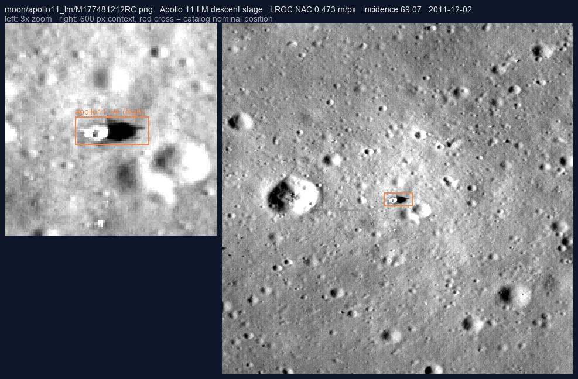
| object | x_min | y_min | x_max | y_max | w | h | shadow | conf | note |
|---|
| apollo11_lm | 363 | 1279 | 404 | 1294 | 42 | 16 | yes | high | located by terrain match from M175124932RC then by eye: bright body x365-382 with 20 px shadow east; crater just SE as in the labeled reference; 650 px west of nominal |
Apollo 12 ALSEP central station apollo12_alsep
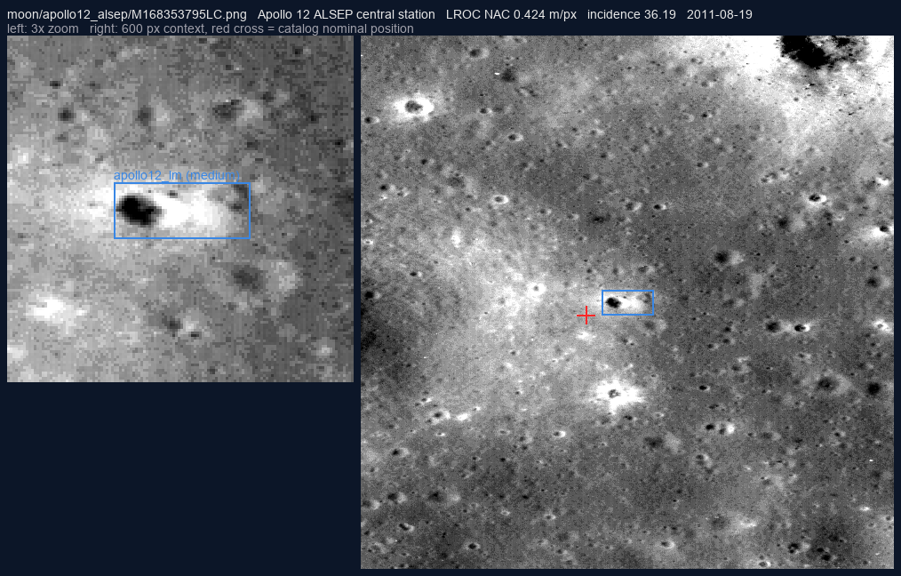
| object | x_min | y_min | x_max | y_max | w | h | shadow | conf | note |
|---|
| apollo12_lm | 1046 | 1000 | 1096 | 1020 | 51 | 21 | yes | medium | transferred from crop moon/apollo12_lm/M168353795LC.png (same frame, offset +304,+162) |
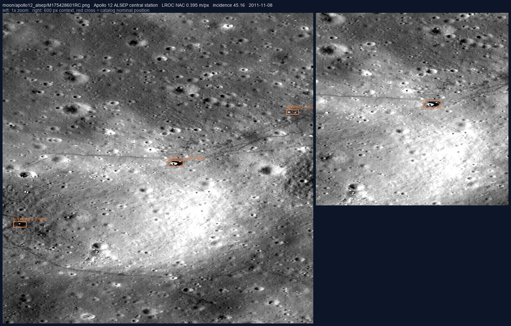
| object | x_min | y_min | x_max | y_max | w | h | shadow | conf | note |
|---|
| apollo12_alsep | 884 | 856 | 921 | 870 | 38 | 15 | yes | high | transferred from crop moon/apollo12_lm/M175428601RC.png (same frame, offset -379,+162) |
| apollo12_lm | 514 | 1015 | 563 | 1032 | 50 | 18 | yes | high | transferred from crop moon/apollo12_lm/M175428601RC.png (same frame, offset -379,+162) |
| surveyor3 | 33 | 1205 | 73 | 1222 | 41 | 18 | yes | high | transferred from crop moon/apollo12_lm/M175428601RC.png (same frame, offset -379,+162) |
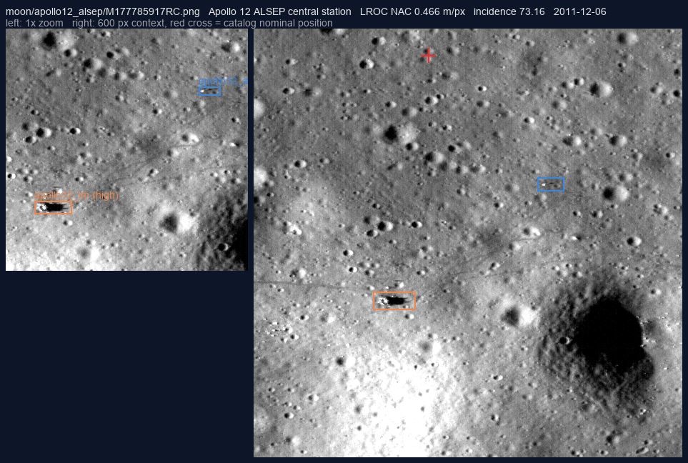
| object | x_min | y_min | x_max | y_max | w | h | shadow | conf | note |
|---|
| apollo12_alsep | 447 | 1199 | 476 | 1210 | 30 | 12 | yes | medium | ALSEP cluster (bright block, dark shadow streak, bright point) with the same layout and 12 m extent as the high-confidence ALSEP box in M175428601RC, 25 px from the position predicted from the LM box; the PSE is inside it but cannot be separated |
| apollo12_lm | 217 | 1359 | 268 | 1376 | 52 | 18 | yes | high | transferred from crop moon/apollo12_lm/M177785917RC.png (same frame, offset +0,+162) |
Apollo 12 LM descent stage apollo12_lm
moon/apollo12_lm/M116466489RC.png: NOT YET ANNOTATED
| object | x_min | y_min | x_max | y_max | w | h | shadow | conf | note |
|---|
| apollo12_lm | 742 | 838 | 792 | 858 | 51 | 21 | yes | medium | oblique frame (emission 28): largest bright object with a 15 px shadow west inside the bright blast zone; terrain match failed, identified by eye only |
| object | x_min | y_min | x_max | y_max | w | h | shadow | conf | note |
|---|
| apollo12_alsep | 1263 | 694 | 1300 | 708 | 38 | 15 | yes | high | cluster of small bright points with shadows at the position predicted from the LM box plus the catalog's relative offset; tracks lead to it |
| apollo12_lm | 893 | 853 | 942 | 870 | 50 | 18 | yes | high | by eye: bright body x895-925 with shadow east, inside the bright blast zone, astronaut tracks radiate from it; 100 px west / 170 px north of nominal |
| surveyor3 | 412 | 1043 | 452 | 1060 | 41 | 18 | yes | high | bright point with 15 px shadow east at the position predicted from the LM box; astronaut tracks reach it |
| object | x_min | y_min | x_max | y_max | w | h | shadow | conf | note |
|---|
| apollo12_lm | 217 | 1197 | 268 | 1214 | 52 | 18 | yes | high | terrain match from M175428601RC then by eye: bright body with 30 px shadow east; 800 px west of nominal |
Apollo 12 LM ascent stage impact apollo12_lm_ascent
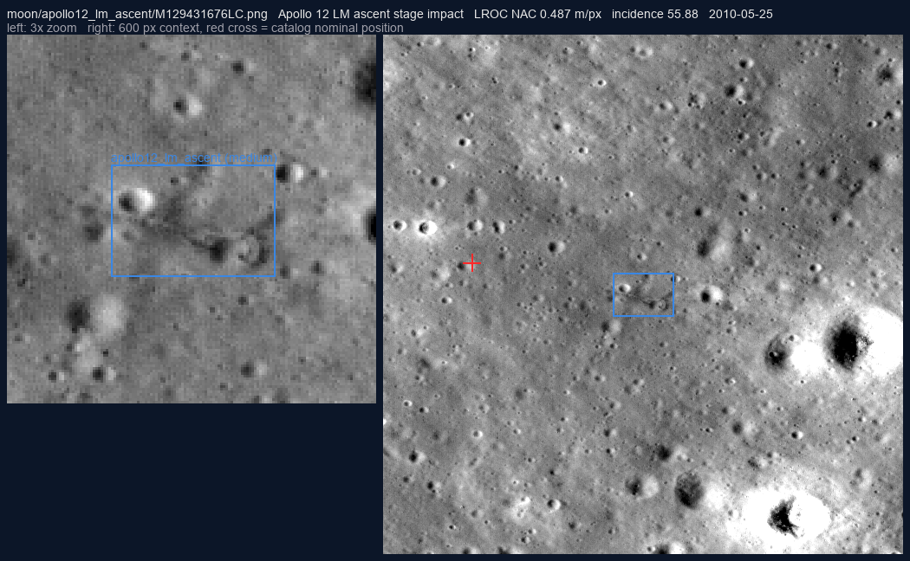
| object | x_min | y_min | x_max | y_max | w | h | shadow | conf | note |
|---|
| apollo12_lm_ascent | 570 | 1040 | 632 | 1082 | 63 | 43 | no | medium | 28 m long, 2 m wide dark linear gouge with dark marks, oriented along track, in the image Stooke & Marcus (2019) used; size and shape match their description (25 m x 2-3 m); 100 m from nominal |
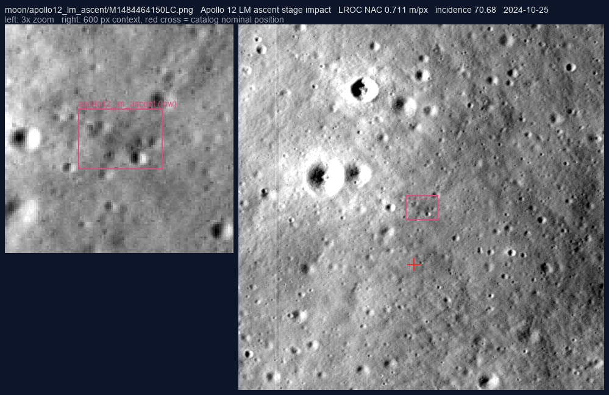
| object | x_min | y_min | x_max | y_max | w | h | shadow | conf | note |
|---|
| apollo12_lm_ascent | 1015 | 915 | 1060 | 947 | 46 | 33 | no | low | low sun, 0.71 m/px, image rotated 180 deg: dark diagonal band at the gouge position transferred by eye from M129431676LC (crater pair and adjacent crater as anchors); the gouge itself is not resolved |
moon/apollo12_lm_ascent/M155376303RC.png: NOT YET ANNOTATED
Apollo 12 Passive Seismic Experiment apollo12_pse
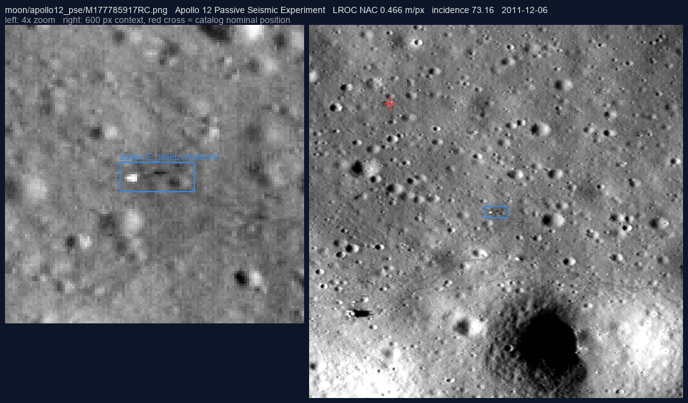
| object | x_min | y_min | x_max | y_max | w | h | shadow | conf | note |
|---|
| apollo12_alsep | 447 | 1193 | 476 | 1204 | 30 | 12 | yes | medium | ALSEP cluster (bright block, dark shadow streak, bright point) with the same layout and 12 m extent as the high-confidence ALSEP box in M175428601RC, 25 px from the position predicted from the LM box; the PSE is inside it but cannot be separated |
Apollo 13 S-IVB impact crater apollo13_sivb
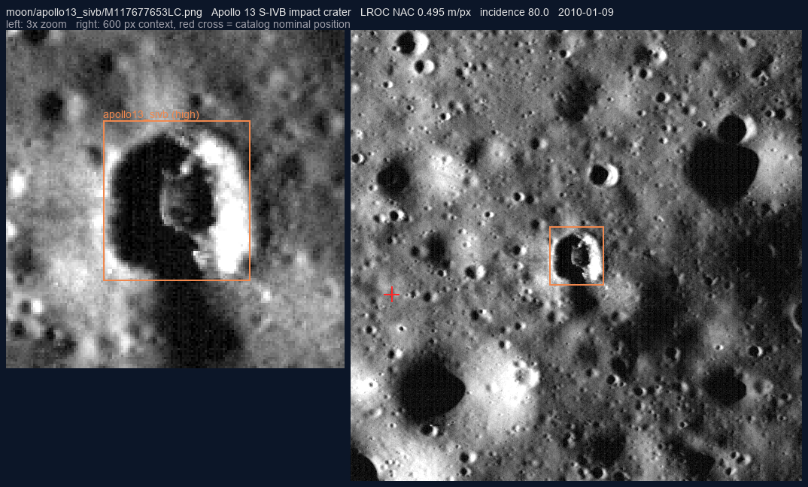
| object | x_min | y_min | x_max | y_max | w | h | shadow | conf | note |
|---|
| apollo13_sivb | 1238 | 938 | 1302 | 1008 | 65 | 71 | yes | high | terrain match from M160139273LC then by eye: 30 m crater with shadowed floor and bright east rim at low sun |
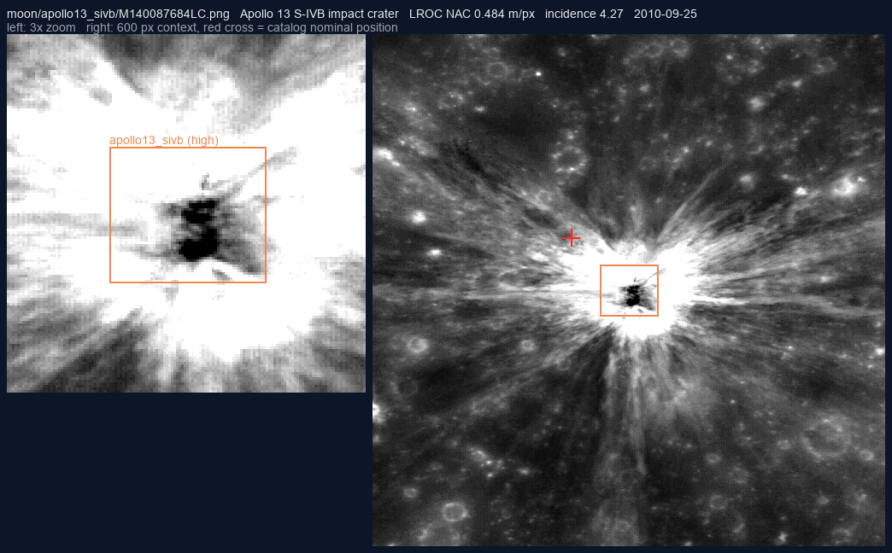
| object | x_min | y_min | x_max | y_max | w | h | shadow | conf | note |
|---|
| apollo13_sivb | 1062 | 1060 | 1122 | 1112 | 61 | 53 | no | high | high-sun frame (incidence 4): dark-floored 30 m crater at the centre of a bright ray system, 60 px east of nominal; box covers the crater, not the rays |
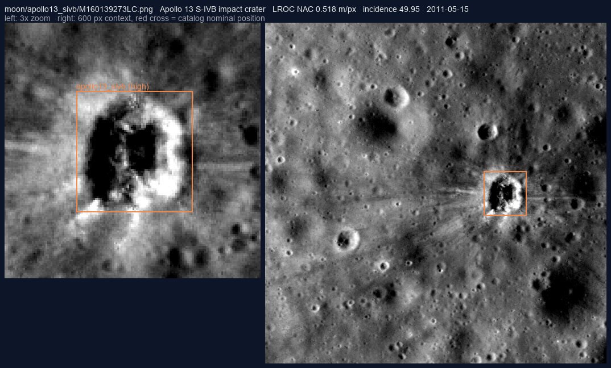
| object | x_min | y_min | x_max | y_max | w | h | shadow | conf | note |
|---|
| apollo13_sivb | 1836 | 848 | 1903 | 918 | 68 | 71 | yes | high | sharp 30 m crater with bright ejecta and faint rays, 840 px east of nominal |
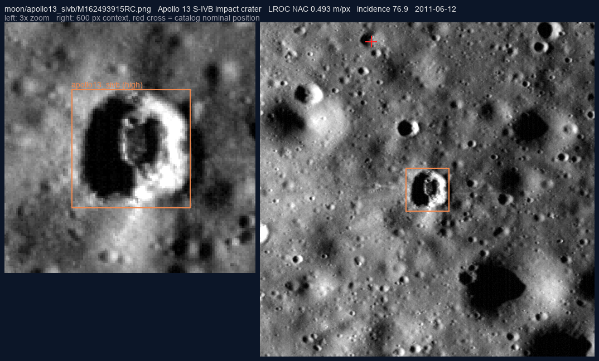
| object | x_min | y_min | x_max | y_max | w | h | shadow | conf | note |
|---|
| apollo13_sivb | 1090 | 1255 | 1160 | 1325 | 71 | 71 | yes | high | terrain match from M160139273LC then by eye: 30 m crater, shadowed west floor, bright east wall |
Apollo 14 ALSEP central station apollo14_alsep
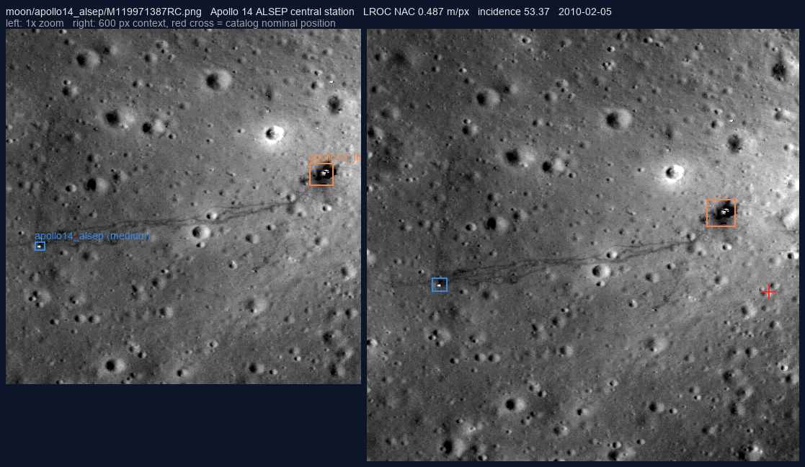
| object | x_min | y_min | x_max | y_max | w | h | shadow | conf | note |
|---|
| apollo14_alsep | 561 | 1009 | 574 | 1020 | 14 | 12 | no | medium | transferred from crop moon/apollo14_lm/M119971387RC.png (same frame, offset +414,-94) |
| apollo14_lm | 942 | 900 | 974 | 930 | 33 | 31 | yes | high | transferred from crop moon/apollo14_lm/M119971387RC.png (same frame, offset +414,-94) |
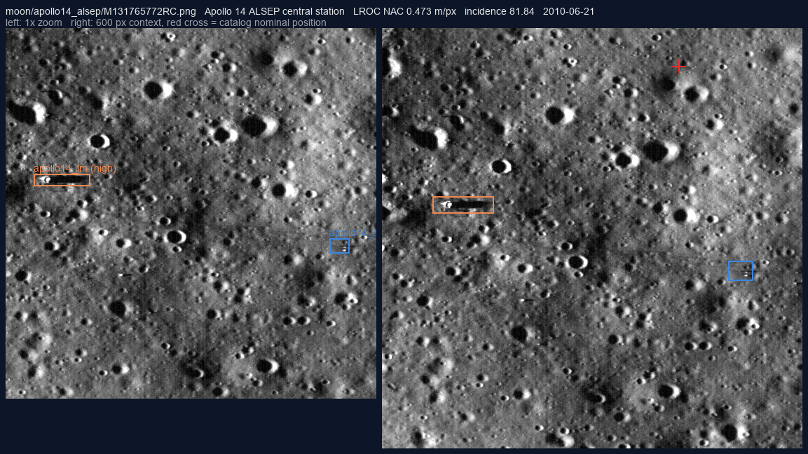
| object | x_min | y_min | x_max | y_max | w | h | shadow | conf | note |
|---|
| apollo14_alsep | 1099 | 1306 | 1126 | 1326 | 28 | 21 | yes | medium | transferred from crop moon/apollo14_lm/M131765772RC.png (same frame, offset -416,-94) |
| apollo14_lm | 677 | 1214 | 756 | 1230 | 80 | 17 | yes | high | transferred from crop moon/apollo14_lm/M131765772RC.png (same frame, offset -416,-94) |
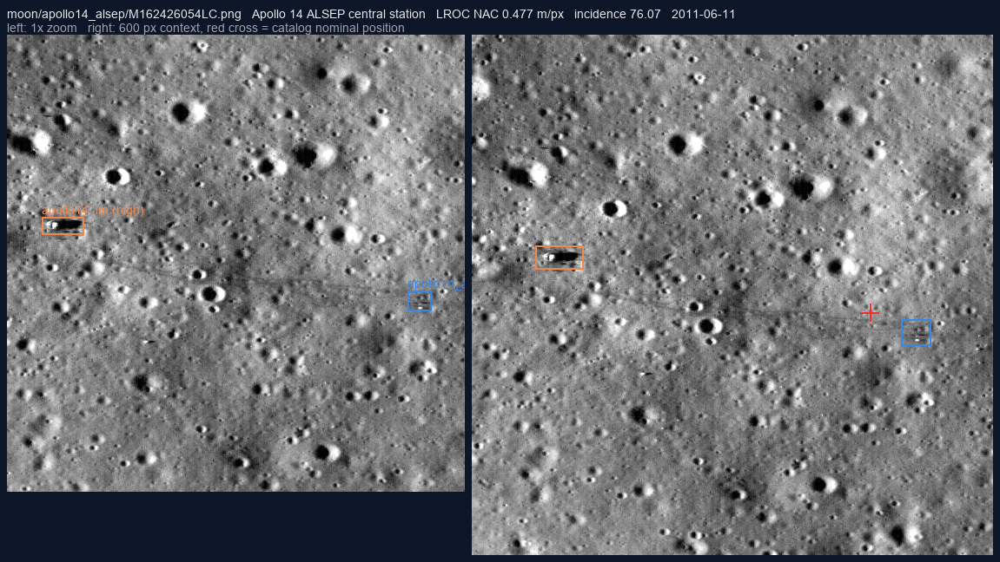
| object | x_min | y_min | x_max | y_max | w | h | shadow | conf | note |
|---|
| apollo14_alsep | 1454 | 1036 | 1480 | 1058 | 27 | 23 | no | medium | transferred from crop moon/apollo14_lm/M162426054LC.png (same frame, offset -52,-94) |
| apollo14_lm | 1033 | 951 | 1080 | 970 | 48 | 20 | yes | high | transferred from crop moon/apollo14_lm/M162426054LC.png (same frame, offset -52,-94) |
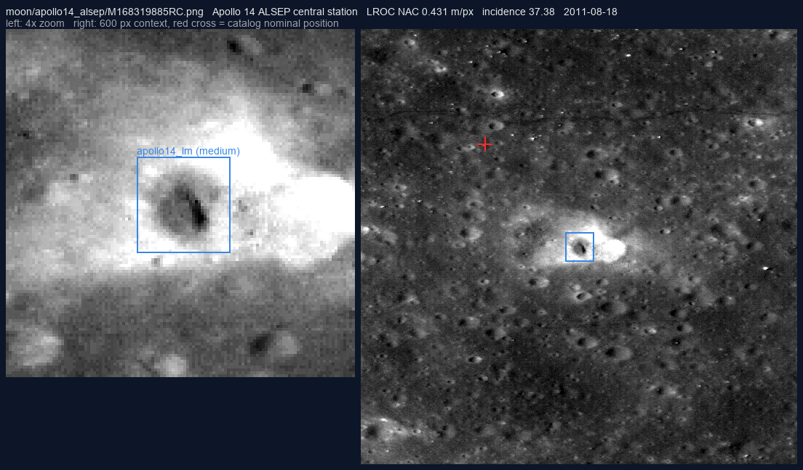
| object | x_min | y_min | x_max | y_max | w | h | shadow | conf | note |
|---|
| apollo14_lm | 822 | 1150 | 853 | 1182 | 32 | 33 | yes | medium | oblique frame (emission 25): LM as a dark halo with bright centre inside the bright blast zone, tracks lead to it |
Apollo 14 LM descent stage apollo14_lm
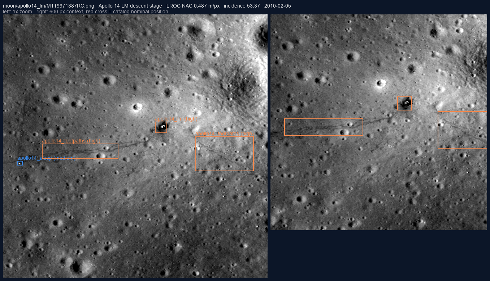
| object | x_min | y_min | x_max | y_max | w | h | shadow | conf | note |
|---|
| apollo14_alsep | 147 | 1103 | 160 | 1114 | 14 | 12 | no | medium | bright 4 px dot where the track from the LM ends, 25 px from the position predicted by the catalog offset from the LM |
| apollo14_lm | 528 | 994 | 560 | 1024 | 33 | 31 | yes | high | bright LM at the hub of the astronaut tracks, inside a dark disturbed halo; box includes the halo; 480 px west of nominal |
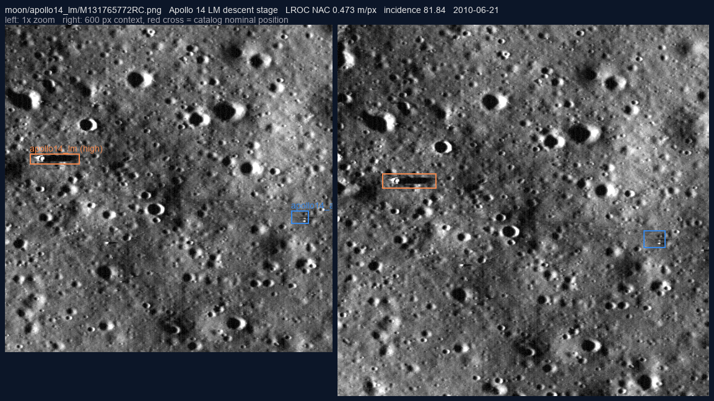
| object | x_min | y_min | x_max | y_max | w | h | shadow | conf | note |
|---|
| apollo14_alsep | 1515 | 1400 | 1542 | 1420 | 28 | 21 | yes | medium | bright dots with small shadows 10 px from the position predicted by the catalog offset from the LM |
| apollo14_lm | 1093 | 1308 | 1172 | 1324 | 80 | 17 | yes | high | low sun (incidence 82): bright body with 60 px shadow east; tracks visible |
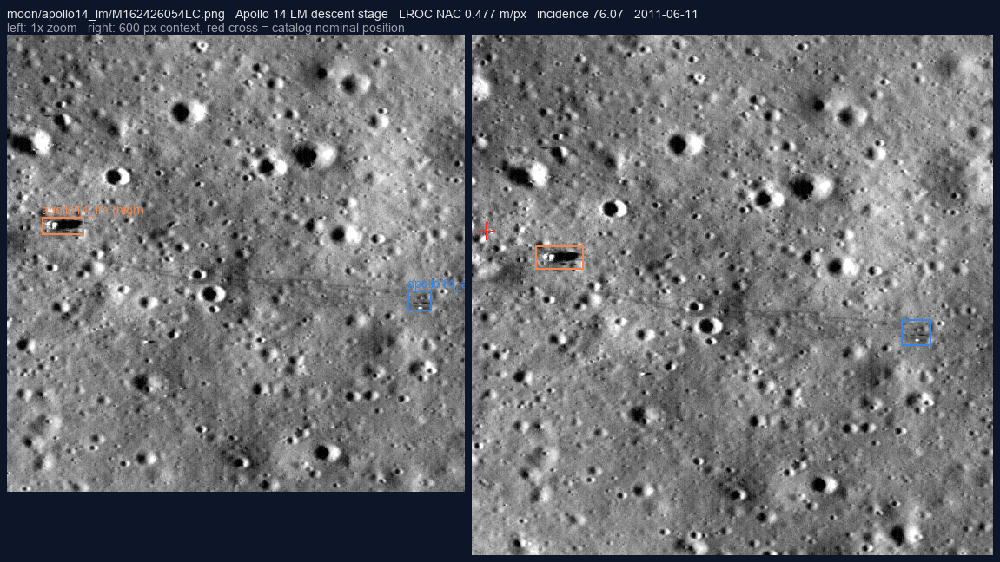
| object | x_min | y_min | x_max | y_max | w | h | shadow | conf | note |
|---|
| apollo14_alsep | 1506 | 1130 | 1532 | 1152 | 27 | 23 | no | medium | cluster of bright dots 18 px from the position predicted by the catalog offset from the LM |
| apollo14_lm | 1085 | 1045 | 1132 | 1064 | 48 | 20 | yes | high | low sun (incidence 76): bright body with 30 px shadow east, tracks lead away from it |
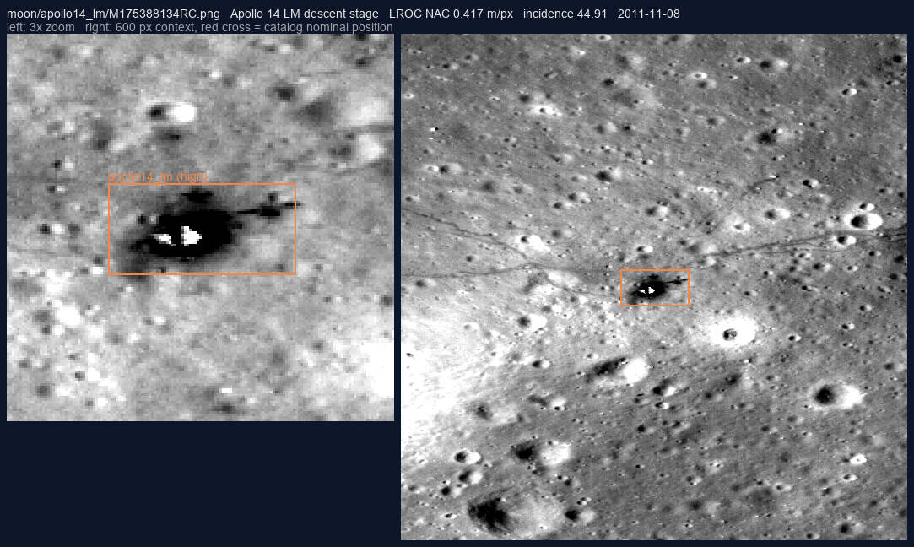
| object | x_min | y_min | x_max | y_max | w | h | shadow | conf | note |
|---|
| apollo14_lm | 272 | 1005 | 345 | 1040 | 74 | 36 | yes | high | bright LM inside dark halo with a shadow streak east; tracks radiate from it; 1340 px west of nominal |
Apollo 14 LM ascent stage impact (candidate position) apollo14_lm_ascent
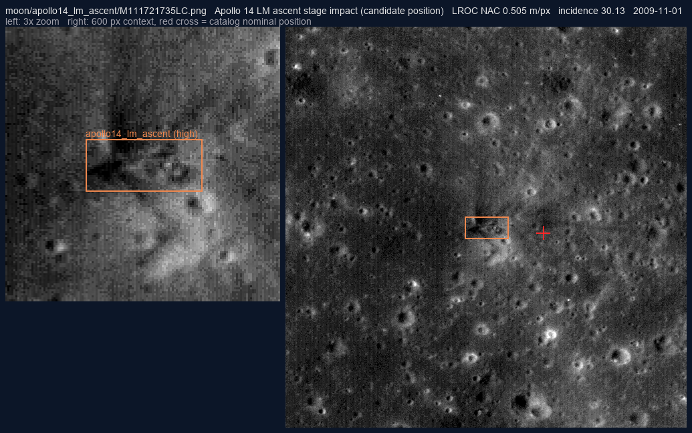
| object | x_min | y_min | x_max | y_max | w | h | shadow | conf | note |
|---|
| apollo14_lm_ascent | 911 | 1004 | 968 | 1029 | 58 | 26 | no | high | Apollo 14 LM ascent-stage impact scar: dark gouge with bright ejecta fan to the SE, this crop is the mirror image of the labeled panel D of Stooke 2017 fig. 4 (planetary.s3.amazonaws.com/web/assets/pictures/20170203_fig-4.jpg, arrows at the dark scar); 42 m W of the nominal pixel. |
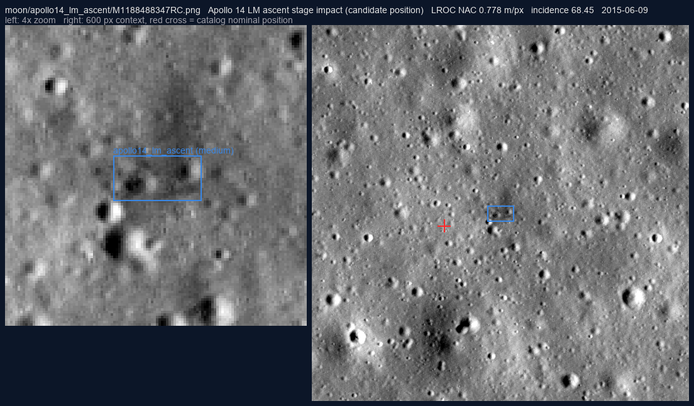
| object | x_min | y_min | x_max | y_max | w | h | shadow | conf | note |
|---|
| apollo14_lm_ascent | 886 | 996 | 920 | 1013 | 35 | 18 | no | medium | Apollo 14 LM impact scar (dark gouge, faint dark rays, 10 m crater pair to the SW) located by matching the crater pattern of Stooke 2017 fig. 4C (north-up, same as this crop) and the mirrored M111721735LC detail; 72 m from the nominal pixel. |
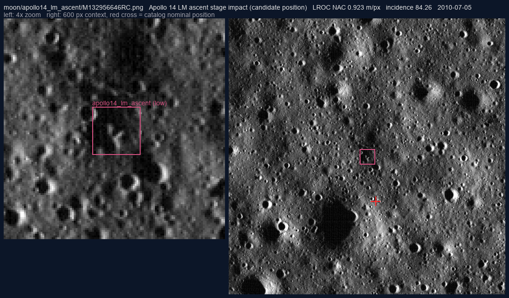
| object | x_min | y_min | x_max | y_max | w | h | shadow | conf | note |
|---|
| apollo14_lm_ascent | 572 | 915 | 597 | 940 | 26 | 26 | no | low | Apollo 14 LM impact scar at 84 deg incidence: dark patch with dark rays at the position predicted from M1188488347RC (NCC as-is peak (592,924), surrounding craters match by eye) but the gouge itself is not resolved in this grazing light; 91 m from the nominal pixel. |
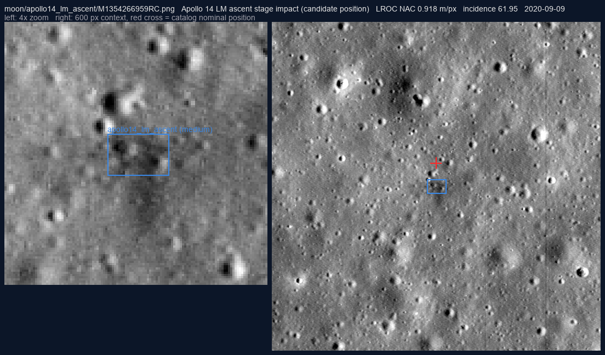
| object | x_min | y_min | x_max | y_max | w | h | shadow | conf | note |
|---|
| apollo14_lm_ascent | 1012 | 1058 | 1039 | 1076 | 28 | 19 | no | medium | Apollo 14 LM impact scar (dark gouge with dark ray S), this crop is M1188488347RC flipped vertically (NCC flipy peak x=1048, crater pattern confirmed by eye incl. the 10 m crater pair now NW of the scar); 39 m from the nominal pixel. |
Apollo 14 Laser Ranging Retroreflector apollo14_lrrr
| object | x_min | y_min | x_max | y_max | w | h | shadow | conf | note |
|---|
| apollo14_lrrr | 1537 | 1048 | 1546 | 1053 | 10 | 6 | yes | low | 2 px bright point with a 2 px shadow at the position predicted from the ALSEP box plus the catalog offset (3 px off); other raised specks 15 px away, so could be a rock; 250 m from nominal |
moon/apollo14_lrrr/M168319885RC.png: NOT YET ANNOTATED
Apollo 14 Passive Seismic Experiment apollo14_pse
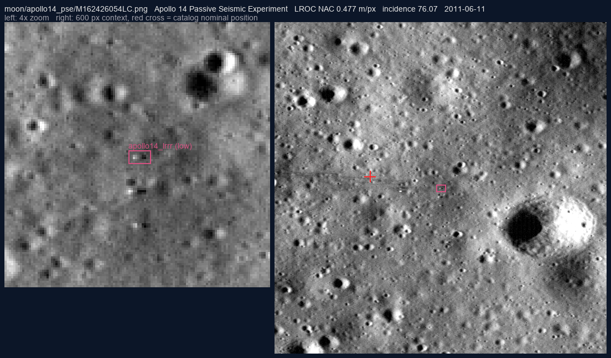
| object | x_min | y_min | x_max | y_max | w | h | shadow | conf | note |
|---|
| apollo14_lrrr | 1537 | 1043 | 1546 | 1048 | 10 | 6 | yes | low | 2 px bright point with a 2 px shadow at the position predicted from the ALSEP box plus the catalog offset (3 px off); other raised specks 15 px away, so could be a rock; 250 m from nominal |
moon/apollo14_pse/M168319885RC.png: NOT YET ANNOTATED
Apollo 14 S-IVB impact crater apollo14_sivb
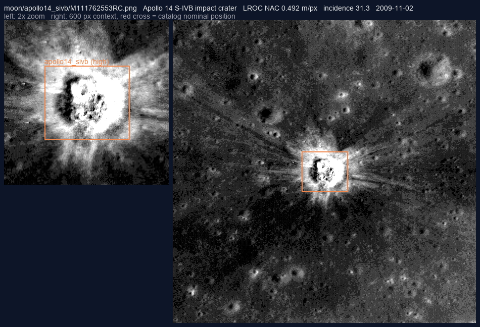
| object | x_min | y_min | x_max | y_max | w | h | shadow | conf | note |
|---|
| apollo14_sivb | 665 | 960 | 748 | 1032 | 84 | 73 | yes | high | 35 m crater with shadowed floor at the centre of a bright ray system; 320 px west of nominal |
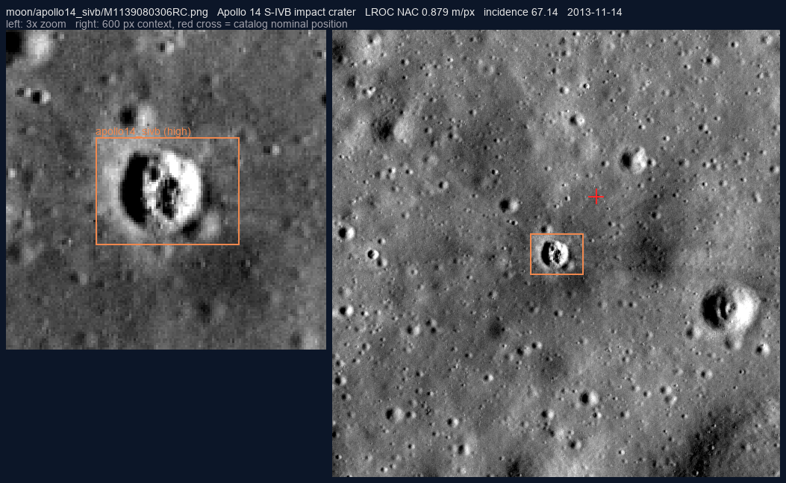
| object | x_min | y_min | x_max | y_max | w | h | shadow | conf | note |
|---|
| apollo14_sivb | 940 | 1078 | 1003 | 1125 | 64 | 48 | yes | high | 35 m crater, shadowed west floor, bright east wall; 90 px from nominal |
moon/apollo14_sivb/M175448936LC.png: NOT YET ANNOTATED
Apollo 15 LM descent stage apollo15_lm
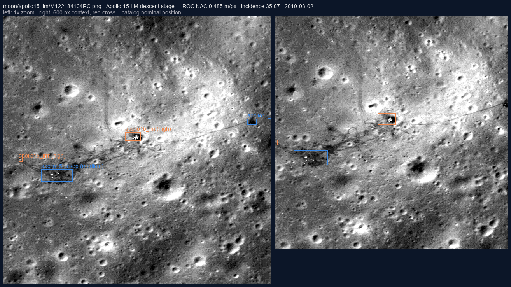
| object | x_min | y_min | x_max | y_max | w | h | shadow | conf | note |
|---|
| apollo15_alsep | 1420 | 1198 | 1500 | 1228 | 81 | 31 | no | medium | cluster of 6 bright dots in a dark disturbed patch at the position predicted from the LM box; box covers the cluster |
| apollo15_lm | 1636 | 1102 | 1675 | 1124 | 40 | 23 | yes | high | bright body with 15 px shadow east at the end of the LRV tracks; 625 px east of nominal |
| apollo15_lrrr | 1362 | 1171 | 1371 | 1177 | 10 | 7 | yes | high | same object as the apollo15_lrrr/M122184104RC box (same frame, offset -302,+52): bright body at the end of the footpath from the ALSEP |
| apollo15_lrv | 1950 | 1068 | 1972 | 1082 | 23 | 15 | yes | medium | dark object with bright centre at the end of a long track, 7 px from the position predicted from the LM box |
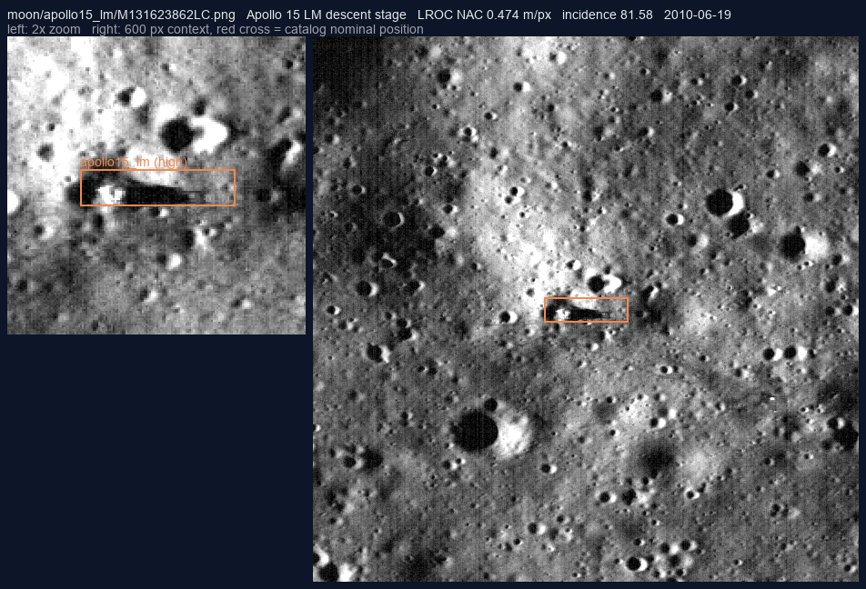
| object | x_min | y_min | x_max | y_max | w | h | shadow | conf | note |
|---|
| apollo15_lm | 1378 | 897 | 1462 | 916 | 85 | 20 | yes | high | low sun (incidence 82): bright body with 60 px shadow east; terrain match from M122184104RC |
| object | x_min | y_min | x_max | y_max | w | h | shadow | conf | note |
|---|
| apollo15_lm | 274 | 844 | 318 | 868 | 45 | 25 | yes | high | low sun (incidence 76): bright LM body with its ~30 px shadow east; terrain match from M122184104RC (box corrected: the earlier one missed the bright body) |
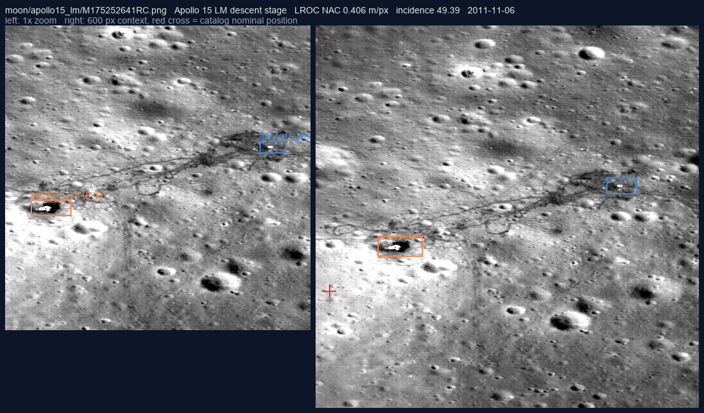
| object | x_min | y_min | x_max | y_max | w | h | shadow | conf | note |
|---|
| apollo15_alsep | 818 | 850 | 858 | 868 | 41 | 19 | no | medium | row of bright dots 30 px west of the position predicted from the LM box; mid-sun frame |
| apollo15_lm | 460 | 942 | 522 | 966 | 63 | 25 | yes | high | bright body with 30 px shadow east inside the bright blast zone; tracks radiate from it |
Apollo 15 Laser Ranging Retroreflector apollo15_lrrr
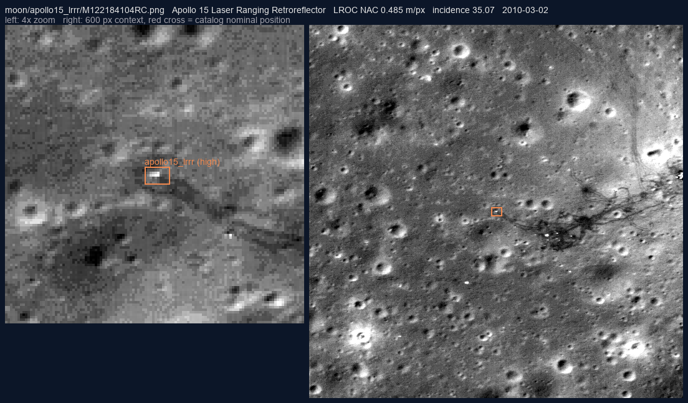
| object | x_min | y_min | x_max | y_max | w | h | shadow | conf | note |
|---|
| apollo15_lrrr | 1664 | 1119 | 1673 | 1125 | 10 | 7 | yes | high | 4x2 px bright body in a disturbed patch at the end of the footpath from the ALSEP, 5 px from the position predicted from the ALSEP box plus the catalog offset; 320 m from nominal |
moon/apollo15_lrrr/M131623862LC.png: NOT YET ANNOTATED
moon/apollo15_lrrr/M162284113RC.png: NOT YET ANNOTATED
Apollo 15 Lunar Roving Vehicle apollo15_lrv
| object | x_min | y_min | x_max | y_max | w | h | shadow | conf | note |
|---|
| apollo15_lm | 1550 | 929 | 1634 | 948 | 85 | 20 | yes | high | transferred from crop moon/apollo15_lm/M131623862LC.png (same frame, offset +172,+32) |
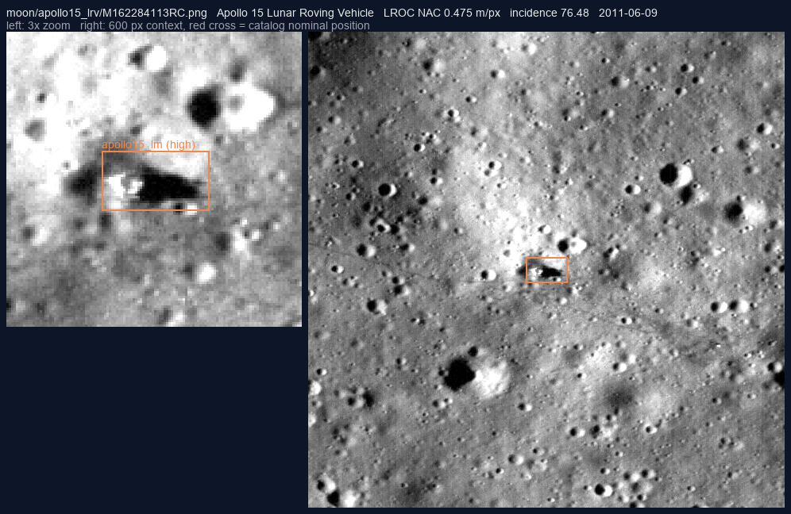
| object | x_min | y_min | x_max | y_max | w | h | shadow | conf | note |
|---|
| apollo15_lm | 593 | 880 | 637 | 904 | 45 | 25 | yes | high | low sun (incidence 76): bright LM body with its ~30 px shadow east; terrain match from M122184104RC (box corrected: the earlier one missed the bright body) |
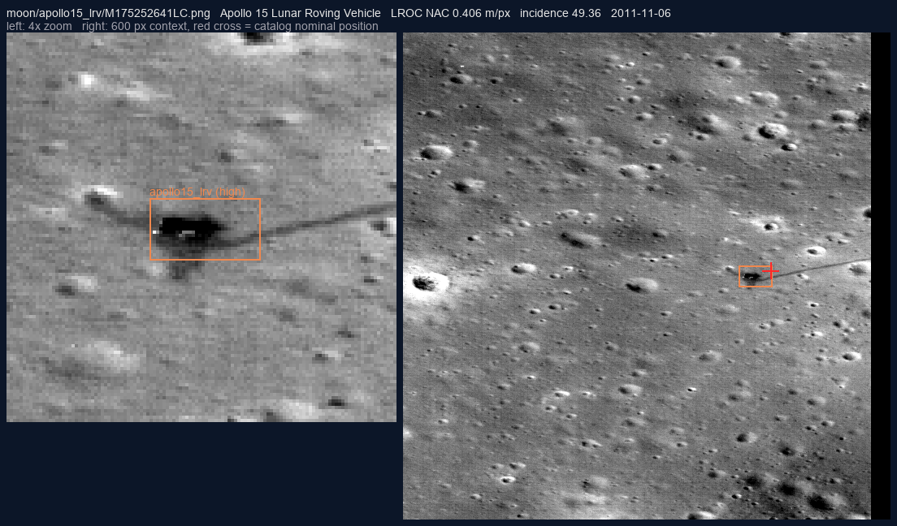
| object | x_min | y_min | x_max | y_max | w | h | shadow | conf | note |
|---|
| apollo15_lrv | 1865 | 1022 | 1898 | 1040 | 34 | 19 | yes | high | oblique frame: dark LRV with bright spots at the end of its track, 850 px east of nominal LM; same offset as the LM box in the RC crop |
Apollo 15 S-IVB impact crater apollo15_sivb
moon/apollo15_sivb/M1367135045LC.png: NOT YET ANNOTATED
moon/apollo15_sivb/M1524199681RC.png: NOT YET ANNOTATED
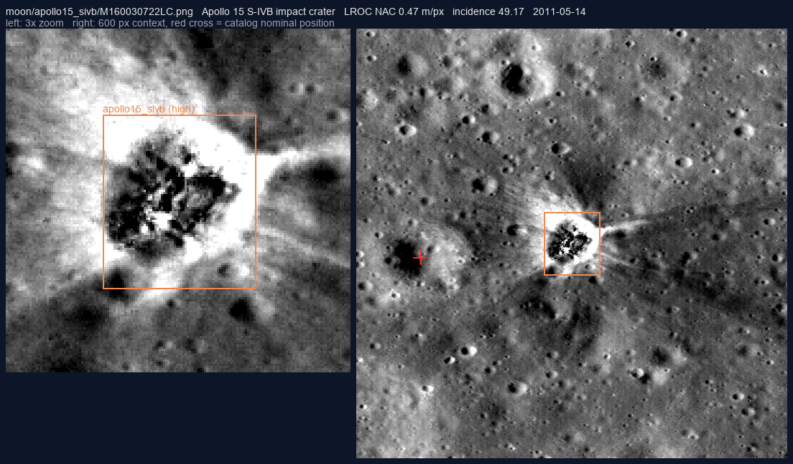
| object | x_min | y_min | x_max | y_max | w | h | shadow | conf | note |
|---|
| apollo15_sivb | 1200 | 965 | 1270 | 1045 | 71 | 81 | yes | high | 35 m crater at the centre of a bright ray system, shadowed west floor; 220 px east of nominal |
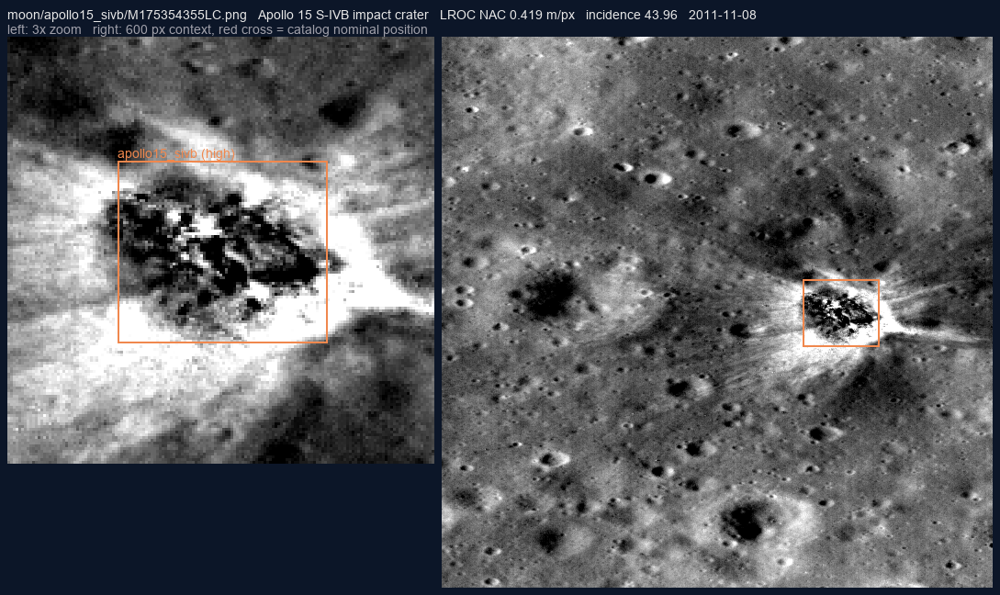
| object | x_min | y_min | x_max | y_max | w | h | shadow | conf | note |
|---|
| apollo15_sivb | 1845 | 810 | 1920 | 875 | 76 | 66 | yes | high | 35 m crater with bright ejecta and dark rays, 840 px east of nominal |
Apollo 16 ALSEP central station apollo16_alsep
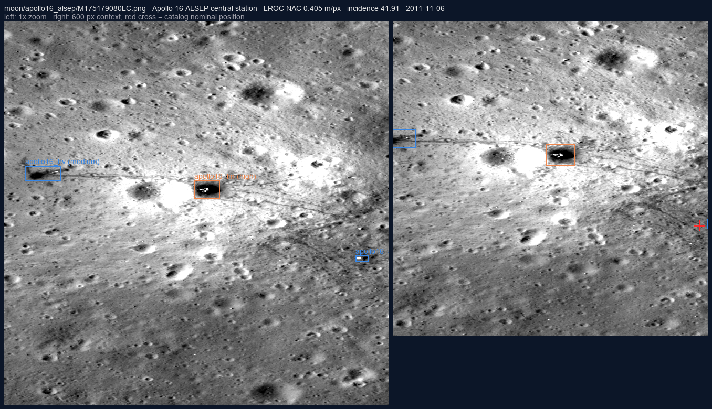
| object | x_min | y_min | x_max | y_max | w | h | shadow | conf | note |
|---|
| apollo16_alsep | 1455 | 1015 | 1478 | 1025 | 24 | 11 | yes | medium | ALSEP central-station cluster: bright 9x3 px body with hard shadow where the footpaths converge, 25 px (10 m) from the position predicted from the LM box plus the catalog offset; the PSE itself cannot be separated at 0.4 m/px |
| apollo16_lm | 1148 | 872 | 1195 | 906 | 48 | 35 | yes | high | transferred from crop moon/apollo16_lm/M175179080LC.png (same frame, offset +0,-136) |
| apollo16_lrv | 826 | 844 | 892 | 872 | 67 | 29 | yes | medium | parked LRV: dark disturbed patch with bright dots and a track leading to it, 17 px from the position predicted from the LM box plus the catalog offset (was labelled apollo16_alsep; the ALSEP is on the other side of the LM) |
Apollo 16 LM descent stage apollo16_lm
moon/apollo16_lm/M117392541LC.png: NOT YET ANNOTATED
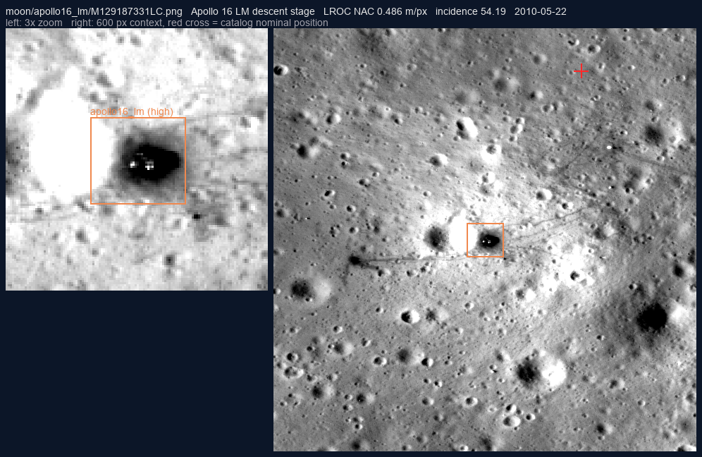
| object | x_min | y_min | x_max | y_max | w | h | shadow | conf | note |
|---|
| apollo16_lm | 866 | 1244 | 910 | 1284 | 45 | 41 | yes | high | bright LM dots in dark halo, shadow east; 170 px west / 240 px south of nominal |
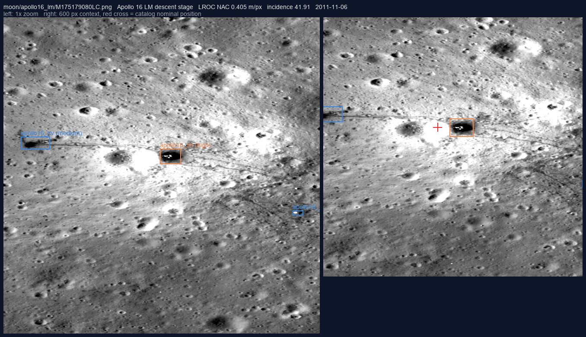
| object | x_min | y_min | x_max | y_max | w | h | shadow | conf | note |
|---|
| apollo16_alsep | 1455 | 1151 | 1478 | 1161 | 24 | 11 | yes | medium | ALSEP central-station cluster: bright 9x3 px body with hard shadow where the footpaths converge, 25 px (10 m) from the position predicted from the LM box plus the catalog offset; the PSE itself cannot be separated at 0.4 m/px |
| apollo16_lm | 1148 | 1008 | 1195 | 1042 | 48 | 35 | yes | high | bright LM with dark disturbed halo and shadow east; tracks lead to it; 130 px east of nominal |
| apollo16_lrv | 826 | 980 | 892 | 1008 | 67 | 29 | yes | medium | parked LRV: dark disturbed patch with bright dots and a track leading to it, 17 px from the position predicted from the LM box plus the catalog offset (was labelled apollo16_alsep; the ALSEP is on the other side of the LM) |
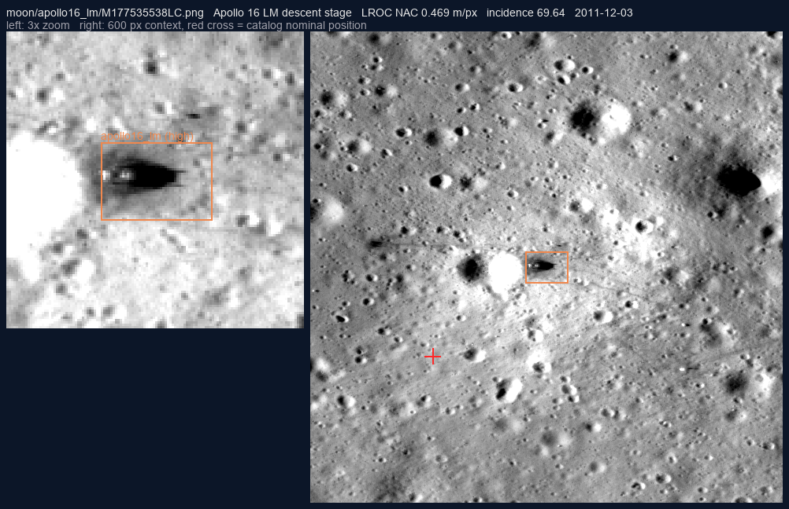
| object | x_min | y_min | x_max | y_max | w | h | shadow | conf | note |
|---|
| apollo16_lm | 1146 | 895 | 1192 | 927 | 47 | 33 | yes | high | bright LM in dark halo with shadow east; same crater pair west of it as in M175179080LC |
Apollo 16 Passive Seismic Experiment apollo16_pse
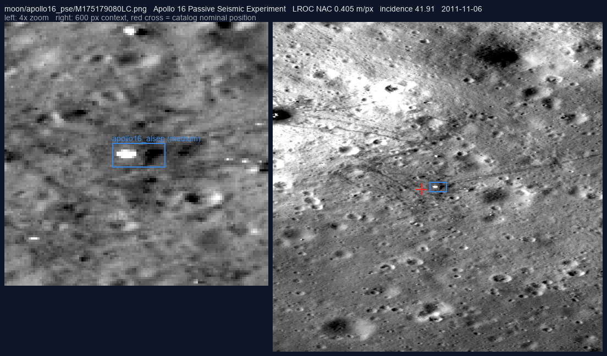
| object | x_min | y_min | x_max | y_max | w | h | shadow | conf | note |
|---|
| apollo16_alsep | 1455 | 1015 | 1478 | 1025 | 24 | 11 | yes | medium | ALSEP central-station cluster: bright 9x3 px body with hard shadow where the footpaths converge, 25 px (10 m) from the position predicted from the LM box plus the catalog offset; the PSE itself cannot be separated at 0.4 m/px |
Apollo 16 S-IVB impact crater apollo16_sivb
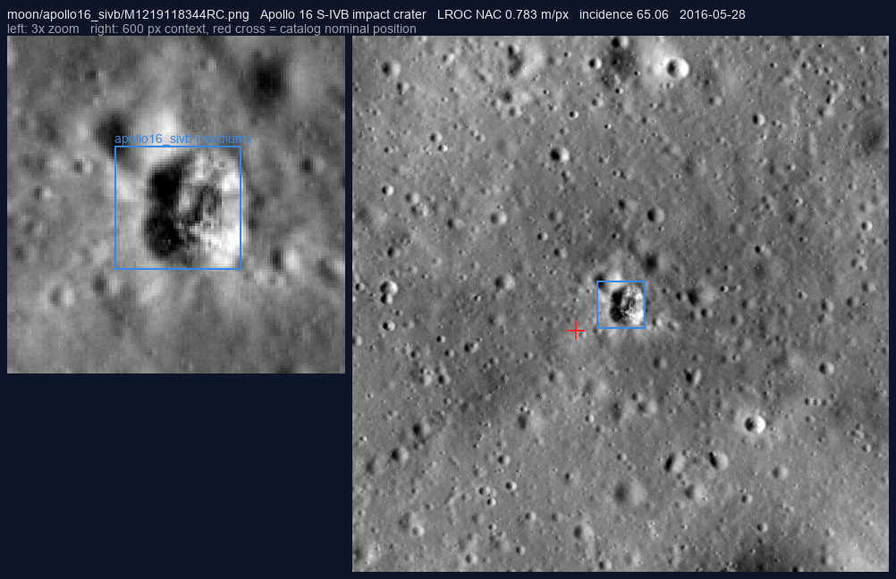
| object | x_min | y_min | x_max | y_max | w | h | shadow | conf | note |
|---|
| apollo16_sivb | 1052 | 973 | 1098 | 1018 | 47 | 46 | no | medium | 20 m crater with dark floor and bright rim 50 px from nominal; smaller than the rayed crater seen in the two high-sun frames |
moon/apollo16_sivb/M1276746552RC.png: NOT YET ANNOTATED
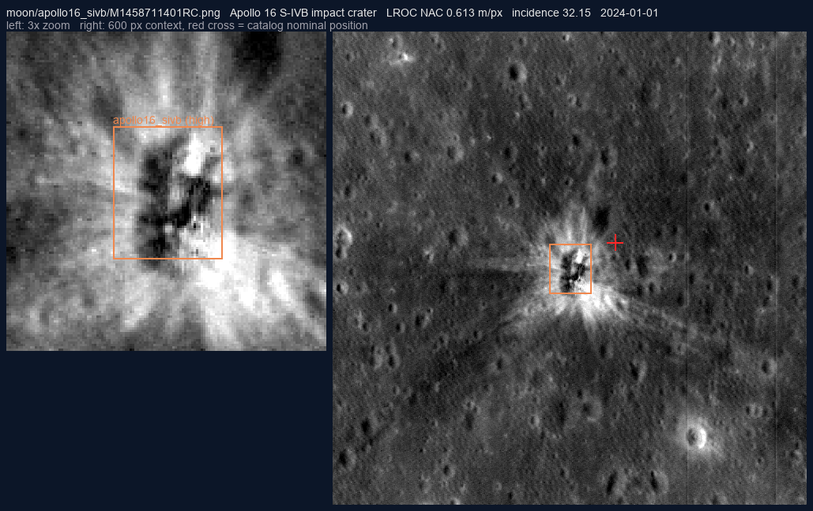
| object | x_min | y_min | x_max | y_max | w | h | shadow | conf | note |
|---|
| apollo16_sivb | 945 | 1030 | 990 | 1085 | 46 | 56 | yes | high | rayed crater with dark floor at the centre of bright rays, 60 px from nominal |
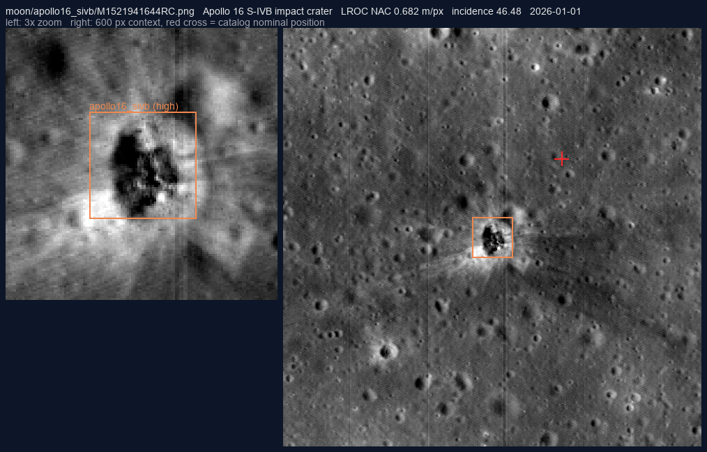
| object | x_min | y_min | x_max | y_max | w | h | shadow | conf | note |
|---|
| apollo16_sivb | 900 | 1112 | 950 | 1162 | 51 | 51 | yes | high | rayed crater, dark floor, bright ejecta; 160 px from nominal |
Apollo 17 ALSEP central station apollo17_alsep
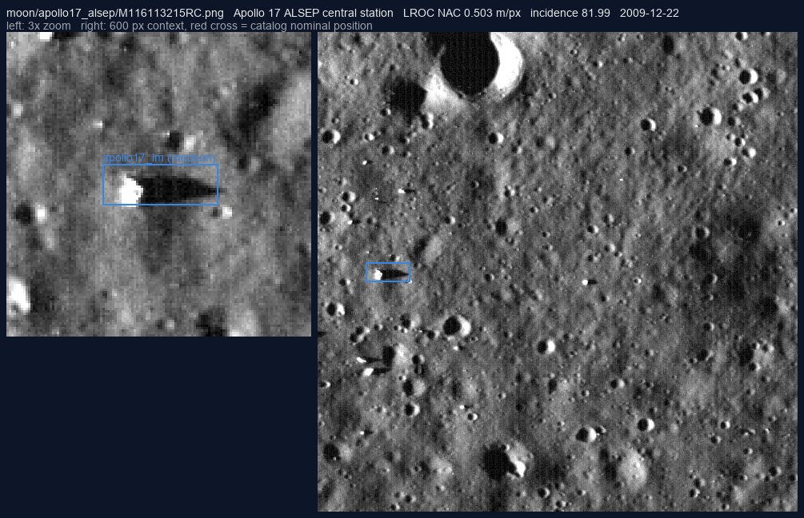
| object | x_min | y_min | x_max | y_max | w | h | shadow | conf | note |
|---|
| apollo17_lm | 64 | 1180 | 111 | 1196 | 48 | 17 | yes | medium | transferred from crop moon/apollo17_lm/M116113215RC.png (same frame, offset -431,+68) |
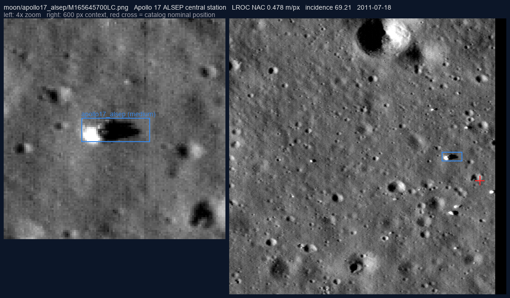
| object | x_min | y_min | x_max | y_max | w | h | shadow | conf | note |
|---|
| apollo17_alsep | 1912 | 966 | 1948 | 978 | 37 | 13 | yes | medium | bright point with 15 px shadow east, 60 px from nominal; nearest raised object to the catalog position |
moon/apollo17_alsep/M168000580LC.png: NOT YET ANNOTATED
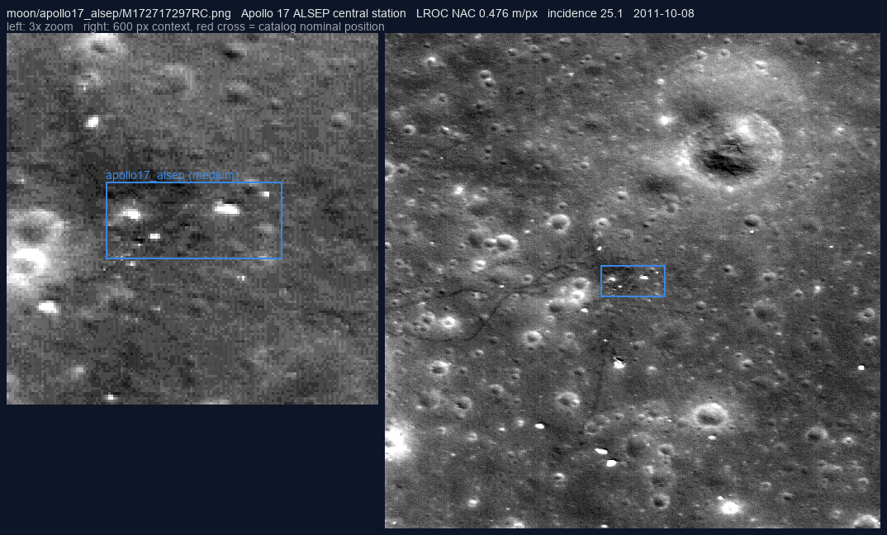
| object | x_min | y_min | x_max | y_max | w | h | shadow | conf | note |
|---|
| apollo17_alsep | 428 | 1233 | 498 | 1263 | 71 | 31 | no | medium | transferred from crop moon/apollo17_lm/M172717297RC.png (same frame, offset -262,+68) |
Apollo 17 LM descent stage apollo17_lm
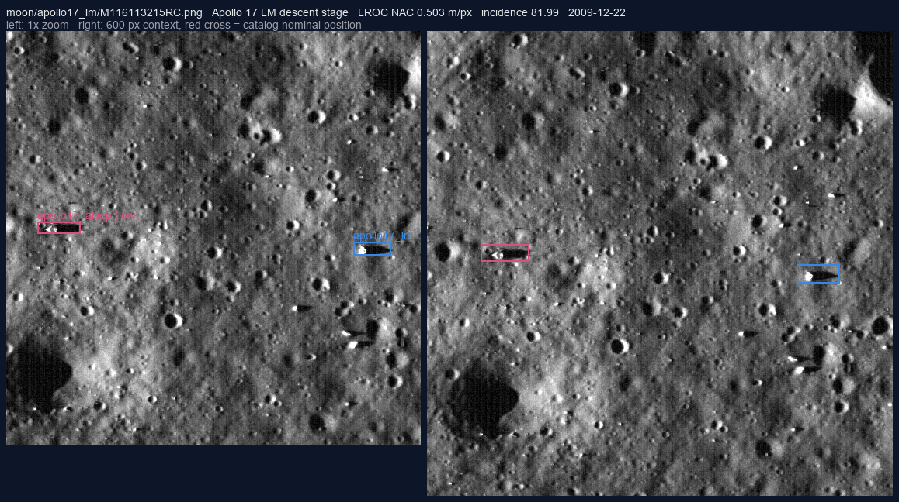
| object | x_min | y_min | x_max | y_max | w | h | shadow | conf | note |
|---|
| apollo17_alsep | 88 | 1086 | 142 | 1100 | 55 | 15 | yes | low | second shadowed object 410 px west of the LM candidate; the catalog puts the ALSEP 300 px west; could be the ALSEP central station or a boulder |
| apollo17_lm | 495 | 1112 | 542 | 1128 | 48 | 17 | yes | medium | low sun (incidence ~80): bright object with 30 px shadow east, 500 px west of nominal; two other shadowed objects nearby; identification by size only |
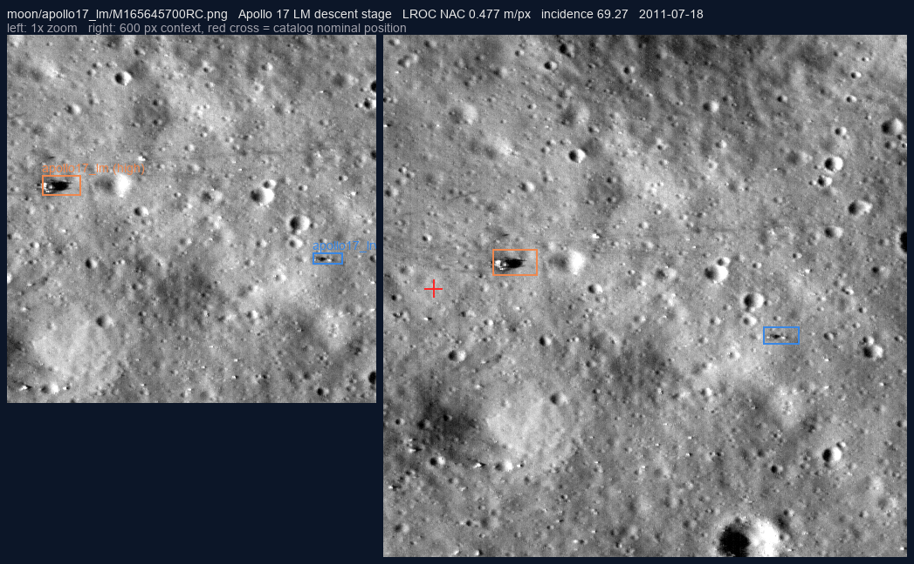
| object | x_min | y_min | x_max | y_max | w | h | shadow | conf | note |
|---|
| apollo17_lm | 505 | 983 | 548 | 1005 | 44 | 23 | yes | high | bright LM with 25 px shadow east, 500 px west of nominal |
| apollo17_lrv | 815 | 1072 | 848 | 1084 | 34 | 13 | yes | medium | bright point with 20 px shadow streak east, 35 px from the position predicted from the LM box |
moon/apollo17_lm/M168000580LC.png: NOT YET ANNOTATED
| object | x_min | y_min | x_max | y_max | w | h | shadow | conf | note |
|---|
| apollo17_alsep | 690 | 1165 | 760 | 1195 | 71 | 31 | no | medium | cluster of bright dots around the position predicted from the LM box via the catalog offset |
| apollo17_lm | 228 | 1236 | 270 | 1262 | 43 | 27 | yes | high | bright LM in dark halo with tracks converging on it, 780 px west of nominal |
Apollo 17 Lunar Roving Vehicle apollo17_lrv
moon/apollo17_lrv/M168000580RC.png: NOT YET ANNOTATED
| object | x_min | y_min | x_max | y_max | w | h | shadow | conf | note |
|---|
| apollo17_alsep | 1021 | 1081 | 1091 | 1111 | 71 | 31 | no | medium | transferred from crop moon/apollo17_lm/M172717297RC.png (same frame, offset +331,-84) |
| apollo17_lm | 559 | 1152 | 601 | 1178 | 43 | 27 | yes | high | transferred from crop moon/apollo17_lm/M172717297RC.png (same frame, offset +331,-84) |
| apollo17_lrv | 245 | 1243 | 280 | 1260 | 36 | 18 | yes | medium | bright point with dark shadow blob east at the position predicted from the LM box via the catalog offset |
| apollo17_sep | 266 | 1132 | 284 | 1147 | 19 | 16 | yes | high | bright object at the centre of a cross of straight footpaths (the SEP antenna layout, arms ~40 m), 25 px (12 m) from the position predicted from the LM box with the catalog offsets |
Apollo 17 Surface Electrical Properties transmitter apollo17_sep
moon/apollo17_sep/M168000580RC.png: NOT YET ANNOTATED
Apollo 17 S-IVB impact crater apollo17_sivb
| object | x_min | y_min | x_max | y_max | w | h | shadow | conf | note |
|---|
| apollo17_sivb | 760 | 1118 | 860 | 1185 | 101 | 68 | yes | high | low sun (incidence 82): 35 m crater with shadowed west floor and bright east wall, blocky floor; terrain match from both high-sun frames agrees; 150 px from nominal |
| object | x_min | y_min | x_max | y_max | w | h | shadow | conf | note |
|---|
| apollo17_sivb | 448 | 872 | 505 | 922 | 58 | 51 | yes | high | rayed crater with dark pits, 540 px west of nominal |
| object | x_min | y_min | x_max | y_max | w | h | shadow | conf | note |
|---|
| apollo17_sivb | 920 | 1080 | 965 | 1125 | 46 | 46 | yes | medium | 0.75 m/px frame: 45 px crater with dark floor and bright east wall at nominal; matcher inconclusive at this resolution |
| object | x_min | y_min | x_max | y_max | w | h | shadow | conf | note |
|---|
| apollo17_sivb | 1080 | 1050 | 1120 | 1090 | 41 | 41 | yes | high | rayed crater at the centre of a bright ray system, 90 px from nominal |
Beresheet crash site beresheet
| object | x_min | y_min | x_max | y_max | w | h | shadow | conf | note |
|---|
| beresheet | 1355 | 1085 | 1375 | 1099 | 21 | 15 | no | high | Beresheet impact: 15 px dark smudge on a small crater rim with bright ejecta, same frame as the LROC release (https://lroc.im-ldi.com/images/1101, box centre 550,550 of the 0.45 m/px image; intensity NCC match ratio 2.5); 240 px (210 m) west of the nominal pixel. |
| object | x_min | y_min | x_max | y_max | w | h | shadow | conf | note |
|---|
| beresheet | 1979 | 977 | 1992 | 991 | 14 | 15 | no | high | Beresheet impact: 10 px dark smudge 60 px from the right edge, at the point that gradient NCC maps onto the smudge of the labeled frame M1310536929RC (flipx, peak ratio 4.6); 520 px (480 m) east of the nominal pixel. |
moon/beresheet/M1478359159LC.png: NOT YET ANNOTATED
Blue Ghost Mission 1 lander blue_ghost1
| object | x_min | y_min | x_max | y_max | w | h | shadow | conf | note |
|---|
| blue_ghost1 | 714 | 1045 | 729 | 1059 | 16 | 15 | yes | high | Blue Ghost: bright triangle with dark shadow matching the LROC release of this frame (https://lroc.im-ldi.com/images/1407, 80 cm image, crop is mirrored); 220 m east of the nominal pixel. |
moon/blue_ghost1/M1508521540RC.png: NOT YET ANNOTATED
| object | x_min | y_min | x_max | y_max | w | h | shadow | conf | note |
|---|
| blue_ghost1 | 333 | 960 | 356 | 974 | 24 | 15 | yes | high | Blue Ghost: saturated 8 px body with 12 px eastward shadow at the position transferred from M1495619099RC by crater point matching (vote ratio 4.3); 540 m west of the nominal pixel. |
| object | x_min | y_min | x_max | y_max | w | h | shadow | conf | note |
|---|
| blue_ghost1 | 536 | 1187 | 556 | 1201 | 21 | 15 | yes | high | Blue Ghost at 28 deg sun: saturated core of the bright engine-blast zone with a 5 px dark notch (the short shadow) at the point where rotation NCC maps the lander of the release-matched frame M1495619099RC (flipy, -15 deg, gradient peak ratio 4.1, intensity 2.5); 330 px (225 m) south-west of the nominal pixel. |
Chandrayaan-2 Vikram lander crash site chandrayaan2_vikram
moon/chandrayaan2_vikram/M1332771378LC.png: NOT YET ANNOTATED
moon/chandrayaan2_vikram/M1335121818LC.png: NOT YET ANNOTATED
Pragyan rover (final position, ~8 m from Vikram) chandrayaan3_pragyan
moon/chandrayaan3_pragyan/M1468784668RC.png: NOT YET ANNOTATED
Chandrayaan-3 Vikram lander chandrayaan3_vikram
| object | x_min | y_min | x_max | y_max | w | h | shadow | conf | note |
|---|
| chandrayaan3_vikram | 1035 | 1109 | 1056 | 1131 | 22 | 23 | yes | high | Vikram: saturated bright body inside a diffuse bright blast halo with a 15 px dark shadow running to the north-east, the same morphology as the LROC release M1447750764LR (https://lroc.im-ldi.com/images/1314); rotation NCC of that release puts the lander here (rot90, 10 deg, peak ratio 1.5), 110 px (75 m) south-east of the nominal pixel. |
moon/chandrayaan3_vikram/M1468784668RC.png: NOT YET ANNOTATED
Chang'e 1 impact (candidate position) change1
| object | x_min | y_min | x_max | y_max | w | h | shadow | conf | note |
|---|
| change1 | 1228 | 896 | 1246 | 920 | 19 | 25 | no | medium | Chang'e 1 impact pit at the apex of a faint ejecta fan; located from M126588566LC by eye (this frame is the mirror image: the 70 m bright crater is 400 px N, the 25 m crater with a dark floor 110 px SW) and NCC flipx peak at (1244-1252, 912); 188 m SE of the nominal pixel. |
| object | x_min | y_min | x_max | y_max | w | h | shadow | conf | note |
|---|
| change1 | 998 | 905 | 1032 | 940 | 35 | 36 | no | high | Chang'e 1 impact: dark pits at the apex of the fan-shaped ejecta spray (fan opens to the S in this crop; the frame is south-up relative to Stooke 2017 fig. 7D, planetary.s3.amazonaws.com/web/assets/pictures/20170203_fig-7.jpg, where the fan opens to the N); 48 m from the nominal pixel. |
moon/change1/M1495696610RC.png: NOT YET ANNOTATED
Chang'e 3 lander change3
moon/change3/M1456303368LC.png: NOT YET ANNOTATED
| object | x_min | y_min | x_max | y_max | w | h | shadow | conf | note |
|---|
| change3 | 112 | 1038 | 155 | 1078 | 44 | 41 | yes | medium | 30 px bright blob (lander plus blast-brightened halo) with a dark patch on its west side, 35 px from nominal; nominal is on the crop edge |
| yutu | 118 | 1092 | 140 | 1112 | 23 | 21 | yes | low | bright object with dark side 45 px south of the lander candidate; Yutu's final position is 21 m (37 px) SSW of the lander |
moon/change3/M1524212845RC.png: NOT YET ANNOTATED
moon/change3/M1532478305RC.png: NOT YET ANNOTATED
Chang'e 4 lander change4
moon/change4/M1305967189RC.png: NOT YET ANNOTATED
moon/change4/M1311886645LC.png: NOT YET ANNOTATED
moon/change4/M1349482902RC.png: NOT YET ANNOTATED
moon/change4/M1403481082RC.png: NOT YET ANNOTATED
Chang'e 5 lander change5
moon/change5/M1461200914RC.png: NOT YET ANNOTATED
moon/change5/M1524423204LC.png: NOT YET ANNOTATED
moon/change5/M1528011618RC.png: NOT YET ANNOTATED
moon/change5/M1535030715RC.png: NOT YET ANNOTATED
Rocket-body double crater, 2022 (Chang'e 5-T1 booster, identity disputed) change5t1_booster
| object | x_min | y_min | x_max | y_max | w | h | shadow | conf | note |
|---|
| change5t1_booster | 876 | 1091 | 913 | 1117 | 38 | 27 | no | medium | Double crater at 82 deg incidence, interior mostly shadow with only the east crater's lit east wall visible; position from terrain registration to M1469915143LC (three independent patches agree within 8 px, ratio ~4); 290 m from the nominal pixel. |
| object | x_min | y_min | x_max | y_max | w | h | shadow | conf | note |
|---|
| change5t1_booster | 667 | 1114 | 700 | 1140 | 34 | 27 | no | high | Same double crater, clearly resolved as two overlapping pits; located by terrain registration from M1528452693LC (NCC 0.72, peak ratio 5.5); 325 m from the nominal pixel. |
| object | x_min | y_min | x_max | y_max | w | h | shadow | conf | note |
|---|
| change5t1_booster | 616 | 1198 | 646 | 1239 | 31 | 42 | no | high | Fresh double crater with a bright west rim and dark radial rays at 30 deg incidence; terrain-matched by eye (mirrored E-W) to LROC's M1407760984R context image (lroc.im-ldi.com/images/1261), same dark-ray signature as in M1528452693LC; 150 m from the nominal pixel. |
| object | x_min | y_min | x_max | y_max | w | h | shadow | conf | note |
|---|
| change5t1_booster | 853 | 1155 | 888 | 1182 | 36 | 28 | no | high | E-W double crater (west ~16 m, east ~18 m) at the centre of a dark-ray halo; terrain-matched by eye (flipped N-S) to LROC's 1100 m context image of M1407760984R (lroc.im-ldi.com/images/1261); 190 m from the nominal pixel. |
Chang'e 6 lander change6
moon/change6/M1472410644LC.png: NOT YET ANNOTATED
moon/change6/M1490040481LC.png: NOT YET ANNOTATED
moon/change6/M1494730035LC.png: NOT YET ANNOTATED
moon/change6/M1525154169RC.png: NOT YET ANNOTATED
Falcon 9 upper-stage impact crater (Blue Ghost 1 / Hakuto-R 2 launch) falcon9_2025_upper_stage
GRAIL-A (Ebb) impact crater grail_ebb
moon/grail_ebb/M1519465295LC.png: NOT YET ANNOTATED
moon/grail_ebb/M1521807004LC.png: NOT YET ANNOTATED
GRAIL-B (Flow) impact crater grail_flow
moon/grail_flow/M1521807004LC.png: NOT YET ANNOTATED
moon/grail_flow/M1534996298RC.png: NOT YET ANNOTATED
Hakuto-R Mission 1 crash site hakuto_r1
| object | x_min | y_min | x_max | y_max | w | h | shadow | conf | note |
|---|
| hakuto_r1 | 166 | 1175 | 177 | 1183 | 12 | 9 | no | low | Hakuto-R M1 impact: 1 px bright speck with dark regolith to its lower-left (the release's arrow A, bright upper-left / dark lower-right, mirrored since this crop is x-flipped), 5 px from where rotation NCC of the LROC cover image (https://lroc.im-ldi.com/images/1302, flipx, -10 deg, ratio 2.6) puts arrow A; 10 m east of the nominal pixel. (1-2 px specks in hummocky terrain: candidate only) |
| object | x_min | y_min | x_max | y_max | w | h | shadow | conf | note |
|---|
| hakuto_r1 | 890 | 947 | 898 | 955 | 9 | 9 | no | low | Hakuto-R M1 impact: two saturated pixels with a dark patch to their lower-left at the point where rotation NCC of the LROC cover image (flipx, -10 deg, ncc 0.82, ratio 2.8) puts arrow A; 85 m west of the nominal pixel; incidence 85 deg so the hummocky terrain is contrasty too. (1-2 px specks in hummocky terrain: candidate only) |
| object | x_min | y_min | x_max | y_max | w | h | shadow | conf | note |
|---|
| hakuto_r1 | 523 | 1168 | 536 | 1177 | 14 | 10 | no | low | Hakuto-R M1 impact: 10 px dark patch with brighter regolith to its lower-right (arrow A rotated 180 deg, as this crop is), 8 px from where rotation NCC of the LROC cover image (rot180, 10 deg, ratio 2.6) puts arrow A; 250 m west of the nominal pixel. (1-2 px specks in hummocky terrain: candidate only) |
Hakuto-R Mission 2 (Resilience) crash site hakuto_r2
| object | x_min | y_min | x_max | y_max | w | h | shadow | conf | note |
|---|
| hakuto_r2 | 1050 | 931 | 1070 | 950 | 21 | 20 | no | high | Resilience impact: same dark smudge with bright speck at the position transferred from M1517068228RC by crater point matching (vote ratio 7.0, same orientation and scale); 170 px (95 m) north-east of the nominal pixel. |
| object | x_min | y_min | x_max | y_max | w | h | shadow | conf | note |
|---|
| hakuto_r2 | 862 | 1120 | 884 | 1140 | 23 | 21 | no | high | Resilience impact: 20 px dark smudge with a bright speck, the dark smudge + bright halo of the LROC release (https://lroc.im-ldi.com/images/1456), neighbouring craters agree with the release at 0.945 m/px; 110 px (60 m) east of the nominal pixel. |
moon/hakuto_r2/M1524086315LC.png: NOT YET ANNOTATED
IM-1 Odysseus lander im1_odysseus
moon/im1_odysseus/M1463440322LC.png: NOT YET ANNOTATED
moon/im1_odysseus/M1471203754RC.png: NOT YET ANNOTATED
IM-2 Athena lander im2_athena
moon/im2_athena/M1496181900LC.png: NOT YET ANNOTATED
LADEE impact crater ladee
moon/ladee/M1469711882RC.png: NOT YET ANNOTATED
moon/ladee/M1524718333RC.png: NOT YET ANNOTATED
moon/ladee/M1528249450LC.png: NOT YET ANNOTATED
moon/ladee/M1535268554LC.png: NOT YET ANNOTATED
LCROSS Centaur upper-stage impact crater (permanent shadow) lcross_centaur
moon/lcross_centaur/M135522944LC.png: NOT YET ANNOTATED
Longjiang-2 impact crater longjiang2
moon/longjiang2/M1337827485RC.png: NOT YET ANNOTATED
| object | x_min | y_min | x_max | y_max | w | h | shadow | conf | note |
|---|
| longjiang2 | 633 | 1078 | 641 | 1087 | 9 | 10 | no | high | 4x5 m fresh crater: affine fit of 6 craters between LROC's labelled after image M1324916226L (lroc.im-ldi.com/images/1132; residual <2 px) and this crop predicts (636,1083), where a small crater with bright wall and shadow sits; 92 m from the nominal pixel. |
| object | x_min | y_min | x_max | y_max | w | h | shadow | conf | note |
|---|
| longjiang2 | 1038 | 1083 | 1047 | 1094 | 10 | 12 | no | high | Same 4x5 m crater as a bright high-albedo spot with a central pit at 24 deg incidence; located by registration from M1457504014LC (locate_points vote ratio 3.5, NCC 0.77) to within 4 px; 50 m from the nominal pixel. |
Luna 16 lander luna16
moon/luna16/M1523757896LC.png: NOT YET ANNOTATED
moon/luna16/M1527260530RC.png: NOT YET ANNOTATED
moon/luna16/M174909036LC.png: NOT YET ANNOTATED
Luna 17 lander luna17
moon/luna17/M131881859LC.png: NOT YET ANNOTATED
moon/luna17/M157825905LC.png: NOT YET ANNOTATED
moon/luna17/M162542164RC.png: NOT YET ANNOTATED
moon/luna17/M175502049RC.png: NOT YET ANNOTATED
Luna 20 lander luna20
moon/luna20/M119482862RC.png: NOT YET ANNOTATED
moon/luna20/M1468729978LC.png: NOT YET ANNOTATED
moon/luna20/M174902210RC.png: NOT YET ANNOTATED
moon/luna20/M177264491LC.png: NOT YET ANNOTATED
Luna 21 lander luna21
moon/luna21/M122007650LC.png: NOT YET ANNOTATED
moon/luna21/M1277550966LC.png: NOT YET ANNOTATED
moon/luna21/M1369194823LC.png: NOT YET ANNOTATED
moon/luna21/M1409094614RC.png: NOT YET ANNOTATED
Luna 23 lander luna23
moon/luna23/M119449091LC.png: NOT YET ANNOTATED
moon/luna23/M1468695090LC.png: NOT YET ANNOTATED
moon/luna23/M174868307LC.png: NOT YET ANNOTATED
moon/luna23/M177223697LC.png: NOT YET ANNOTATED
Luna 24 lander luna24
moon/luna24/M119449091RC.png: NOT YET ANNOTATED
moon/luna24/M139497036RC.png: NOT YET ANNOTATED
moon/luna24/M1412427826LC.png: NOT YET ANNOTATED
moon/luna24/M1468695090LC.png: NOT YET ANNOTATED
Luna 25 crash crater luna25
| object | x_min | y_min | x_max | y_max | w | h | shadow | conf | note |
|---|
| luna25 | 996 | 884 | 1018 | 909 | 23 | 26 | no | medium | Luna 25 crater: 13 px fresh crater with saturated bright ejecta and a dark halo with faint dark rays, the only such feature near where rotation NCC of the LROC release M1447547309R (https://lroc.im-ldi.com/images/1311, as-is, 5 deg, peak ratio 1.45) puts the arrow; 130 px (100 m) north-west of the nominal pixel. |
moon/luna25/M1480349318RC.png: NOT YET ANNOTATED
Luna 9 lander (candidate position, Egorov) luna9_egorov
moon/luna9_egorov/M1257012443LC.png: NOT YET ANNOTATED
moon/luna9_egorov/M1280524724LC.png: NOT YET ANNOTATED
moon/luna9_egorov/M1336934365RC.png: NOT YET ANNOTATED
moon/luna9_egorov/M1453114602RC.png: NOT YET ANNOTATED
Luna 9 lander (candidate position, Pinault et al.) luna9_pinault
| object | x_min | y_min | x_max | y_max | w | h | shadow | conf | note |
|---|
| luna9_pinault | 808 | 1097 | 834 | 1107 | 27 | 11 | yes | low | Candidate only: the same bright-plus-dark-spots object 'a' of Pinault et al. 2026 Fig. 1, located from M132071202LC by terrain match (this crop is flipped vertically: NCC flipy peak (824,1112) ratio 2.2, locate_points (816,1110) ratio 1.9, crater pattern checked by eye); 250 m from the nominal pixel. Unconfirmed, could be a rock. |
| object | x_min | y_min | x_max | y_max | w | h | shadow | conf | note |
|---|
| luna9_pinault | 1364 | 803 | 1393 | 816 | 30 | 14 | yes | low | Candidate only: object 'a' (bright spot with two dark spots E of it, the 43.8% 'Landing_Module' detection) of Pinault, Yano & Crawford 2026 Fig. 1, which is this very frame (nature.com/articles/s44453-025-00020-x, fig: media.springernature.com/full/springer-static/image/art%3A10.1038%2Fs44453-025-00020-x/MediaObjects/44453_2025_20_Fig1_HTML.png); the figure is rotated 180 deg relative to the crop and NCC-registered to it (peak ratio 2.3, crater pattern verified by eye); 200 m NE of the nominal pixel. Unconfirmed, could be a rock. |
moon/luna9_pinault/M1484744487RC.png: NOT YET ANNOTATED
moon/luna9_pinault/M1515176570LC.png: NOT YET ANNOTATED
Lunokhod 1 rover (final position) lunokhod1
moon/lunokhod1/M131881859LC.png: NOT YET ANNOTATED
moon/lunokhod1/M157825905RC.png: NOT YET ANNOTATED
moon/lunokhod1/M162542164RC.png: NOT YET ANNOTATED
| object | x_min | y_min | x_max | y_max | w | h | shadow | conf | note |
|---|
| lunokhod1 | 656 | 1043 | 684 | 1056 | 29 | 14 | yes | medium | 10 px bright compact object with a dark shadow east (craters in this frame are dark-west, so a raised object); 360 px west of nominal; size fits the 2.2 m rover |
Lunokhod 2 rover (final position) lunokhod2
moon/lunokhod2/M119646179LC.png: NOT YET ANNOTATED
moon/lunokhod2/M132630442RC.png: NOT YET ANNOTATED
moon/lunokhod2/M139707174RC.png: NOT YET ANNOTATED
moon/lunokhod2/M177433351LC.png: NOT YET ANNOTATED
Ranger 6 impact crater ranger6
moon/ranger6/M1276444439LC.png: NOT YET ANNOTATED
| object | x_min | y_min | x_max | y_max | w | h | shadow | conf | note |
|---|
| ranger6 | 676 | 866 | 704 | 894 | 29 | 29 | no | low | Fresh 14 m crater with a brilliant ray system 180 m from the nominal pixel, the only candidate of Ranger size in the crop; rim poorly defined in the saturated ejecta; no labelled LROC image of the Ranger 6 crater matched (featured-site view lroc.im-ldi.com/featured_sites/ranger-6 too coarse); 180 m from the nominal pixel. |
moon/ranger6/M144483945RC.png: NOT YET ANNOTATED
moon/ranger6/M177494593RC.png: NOT YET ANNOTATED
Ranger 7 impact crater ranger7
| object | x_min | y_min | x_max | y_max | w | h | shadow | conf | note |
|---|
| ranger7 | 950 | 1074 | 970 | 1094 | 21 | 21 | no | high | Same rayed crater (17 px) with west-wall shadow; located by terrain registration from M153014430LC (flipped E-W, NCC peak ratio 2.1) and confirmed by the ray pattern and neighbouring craters; 74 m from the nominal pixel. |
| object | x_min | y_min | x_max | y_max | w | h | shadow | conf | note |
|---|
| ranger7 | 899 | 782 | 931 | 811 | 33 | 30 | no | high | Ranger 7 crater (13 m, 30 px) at 84 deg incidence, dark bowl with bright east rim; this is the frame of LROC's labelled low-sun image M132963565R (lroc.im-ldi.com/images/52) and terrain registration from the labelled M153014430LC lands here (NCC peak ratio 8.2); 124 m from the nominal pixel. |
| object | x_min | y_min | x_max | y_max | w | h | shadow | conf | note |
|---|
| ranger7 | 684 | 1044 | 701 | 1062 | 18 | 19 | no | medium | Bowl crater (16 px) with dark west wall and bright east rim at the position predicted by two independent point-set registrations from M153014430LC and M132963565RC (agree within 3 px, vote ratio 2.0); rays not visible at this sun angle; 72 m from the nominal pixel. |
| object | x_min | y_min | x_max | y_max | w | h | shadow | conf | note |
|---|
| ranger7 | 998 | 1064 | 1032 | 1098 | 35 | 35 | no | high | Ranger 7 crater (14 m) with a brilliant ray system; this is the frame of LROC's labelled image M153014430L (lroc.im-ldi.com/images/52), same bright rayed crater with the dark-haloed crater to its SW; 28 m from the nominal pixel. |
Ranger 8 impact crater ranger8
moon/ranger8/M1366895898LC.png: NOT YET ANNOTATED
| object | x_min | y_min | x_max | y_max | w | h | shadow | conf | note |
|---|
| ranger8 | 282 | 982 | 308 | 1004 | 27 | 23 | no | low | Fresh 13 m crater with a bright ray system, the only rayed crater of Ranger size within 400 m of the nominal pixel; no published labelled LROC image of the Ranger 8 crater was found (the featured-site view lroc.im-ldi.com/featured_sites/ranger-8 could not be matched), so identity rests on size and freshness only; 107 m from the nominal pixel. |
| object | x_min | y_min | x_max | y_max | w | h | shadow | conf | note |
|---|
| ranger8 | 782 | 942 | 812 | 972 | 31 | 31 | no | low | Same crater located by registration from M137387301RC (flipped N-S, NCC peak ratio 2.9, point-vote ratio 3.0); identity as Ranger 8 unconfirmed; 111 m from the nominal pixel. |
| object | x_min | y_min | x_max | y_max | w | h | shadow | conf | note |
|---|
| ranger8 | 1299 | 922 | 1331 | 952 | 33 | 31 | no | low | Same rayed crater (dark west bowl, bright east wall) located by terrain registration from M137387301RC (NCC 0.33, peak ratio 5.5); identity as Ranger 8 unconfirmed; 205 m from the nominal pixel. |
Ranger 9 impact crater ranger9
| object | x_min | y_min | x_max | y_max | w | h | shadow | conf | note |
|---|
| ranger9 | 1086 | 999 | 1107 | 1017 | 22 | 19 | no | high | Same crater (16 px); located by terrain registration from the LROC-anchored M117507817LC (flipped N-S, NCC 0.34, peak ratio 5.2) and confirmed by the neighbouring crater pattern; 65 m from the nominal pixel. |
| object | x_min | y_min | x_max | y_max | w | h | shadow | conf | note |
|---|
| ranger9 | 1412 | 1027 | 1438 | 1046 | 27 | 20 | no | high | Ranger 9 crater (14 m, 16 px): LROC's Ranger 9 featured-site image M117507817L (lroc.im-ldi.com/featured_sites/ranger-9), which is centred on the crater, matches this crop at NCC 0.90 with its centre on this bowl crater with a bright east rim; 192 m from the nominal pixel. |
| object | x_min | y_min | x_max | y_max | w | h | shadow | conf | note |
|---|
| ranger9 | 154 | 948 | 190 | 984 | 37 | 37 | no | high | Same rayed crater (28 px, dark west wall, bright east rim) 160 px from the crop edge; crater configuration identical to M157607994RC; 428 m from the nominal pixel. |
| object | x_min | y_min | x_max | y_max | w | h | shadow | conf | note |
|---|
| ranger9 | 846 | 1224 | 878 | 1256 | 33 | 33 | no | high | Same crater (30 px) at the centre of a bright ray system at 26 deg incidence; the surrounding crater pattern (two bright craters NW, crater pair S) matches the LROC-anchored M117507817LC after an E-W flip; 126 m from the nominal pixel. |
SLIM lander slim
| object | x_min | y_min | x_max | y_max | w | h | shadow | conf | note |
|---|
| slim | 1110 | 888 | 1117 | 896 | 8 | 9 | yes | high | SLIM: 3 px bright body with 2 px shadow, same frame as the LROC release (https://lroc.im-ldi.com/images/1358, arrow at 553,548 of the 0.8 m/px image) and terrain matches it; 80 m east, 60 m south of the nominal pixel. |
| object | x_min | y_min | x_max | y_max | w | h | shadow | conf | note |
|---|
| slim | 1171 | 1126 | 1188 | 1134 | 18 | 9 | yes | high | SLIM: saturated 4 px body with a 12 px eastward shadow at the position predicted from M1460739214LC by gradient NCC (flipx, peak ratio 4.3), isolated on smooth ground; 110 m east, 70 m south of the nominal pixel. |
| object | x_min | y_min | x_max | y_max | w | h | shadow | conf | note |
|---|
| slim | 1823 | 1115 | 1834 | 1122 | 12 | 8 | yes | medium | SLIM: saturated 4 px body with a 3 px shadow to the east (sun from the west in this frame), 15 px from the point predicted from M1467772940RC by NCC (as-is, peak ratio only 1.5); 230 px (200 m) east of the nominal pixel. |
moon/slim/M1527456612LC.png: NOT YET ANNOTATED
SMART-1 impact gouge (candidate position) smart1
| object | x_min | y_min | x_max | y_max | w | h | shadow | conf | note |
|---|
| smart1 | 944 | 968 | 957 | 1000 | 14 | 33 | no | high | SMART-1 gouge seen at 87 deg incidence as a 30 px N-S dark/bright linear scar, matching the right panels of Stooke 2017 fig. 9 (M1139222997L, M1160419708L look the same) and the same position relative to the bright 20 m crater to the NW; 49 m from the nominal pixel. |
| object | x_min | y_min | x_max | y_max | w | h | shadow | conf | note |
|---|
| smart1 | 1934 | 684 | 1964 | 737 | 31 | 54 | no | high | SMART-1 gouge, the same N-S scar crossing a small pre-existing crater as in Stooke 2017 fig. 9 (M140210394L panel), located here by eye from the crater pattern (bright 20 m crater 300 px NW, pair of craters NE); 165 m E of the nominal pixel, 80 px from the right crop edge. |
| object | x_min | y_min | x_max | y_max | w | h | shadow | conf | note |
|---|
| smart1 | 745 | 1003 | 764 | 1045 | 20 | 43 | no | high | SMART-1 gouge (dark linear scar with bright E flank, crossing a small crater) 95 px SE of the same 20 m bright crater that sits NW of the scar in Stooke 2017 fig. 9 (planetary.org/articles/0207-finding-spacecraft-impacts-on-the-moon); 16 m from the nominal pixel. |
| object | x_min | y_min | x_max | y_max | w | h | shadow | conf | note |
|---|
| smart1 | 910 | 910 | 942 | 962 | 33 | 53 | no | high | SMART-1 impact gouge (4x20 m linear scar with bright N end and faint ejecta fan to the S): this exact frame is the labeled left panel of Stooke 2017 fig. 9 (planetary.s3.amazonaws.com/web/assets/pictures/20170203_fig-9.jpg); 65 m NW of the nominal pixel. |
Surveyor 1 lander surveyor1
moon/surveyor1/M1096779945RC.png: NOT YET ANNOTATED
| object | x_min | y_min | x_max | y_max | w | h | shadow | conf | note |
|---|
| surveyor1 | 860 | 1136 | 875 | 1148 | 16 | 13 | yes | low | high sun (incidence 23): isolated 6 px bright dot with no crater rim, 175 px from nominal; the only non-crater candidate within 450 px |
moon/surveyor1/M1276865940RC.png: NOT YET ANNOTATED
moon/surveyor1/M129574162RC.png: NOT YET ANNOTATED
Surveyor 3 lander surveyor3
| object | x_min | y_min | x_max | y_max | w | h | shadow | conf | note |
|---|
| apollo12_lm | 347 | 655 | 397 | 675 | 51 | 21 | yes | medium | transferred from crop moon/apollo12_lm/M168353795LC.png (same frame, offset -395,-183) |
| object | x_min | y_min | x_max | y_max | w | h | shadow | conf | note |
|---|
| apollo12_alsep | 1757 | 511 | 1794 | 525 | 38 | 15 | yes | high | transferred from crop moon/apollo12_lm/M175428601RC.png (same frame, offset +494,-183) |
| apollo12_lm | 1387 | 670 | 1436 | 687 | 50 | 18 | yes | high | transferred from crop moon/apollo12_lm/M175428601RC.png (same frame, offset +494,-183) |
| surveyor3 | 906 | 860 | 946 | 877 | 41 | 18 | yes | high | transferred from crop moon/apollo12_lm/M175428601RC.png (same frame, offset +494,-183) |
moon/surveyor3/M177785917LC.png: NOT YET ANNOTATED
Surveyor 3 retrorocket impact surveyor3_retrorocket
moon/surveyor3_retrorocket/M168353795LC.png: NOT YET ANNOTATED
| object | x_min | y_min | x_max | y_max | w | h | shadow | conf | note |
|---|
| surveyor3_retrorocket | 912 | 862 | 931 | 875 | 20 | 14 | no | low | very dark elongated spot with a diffuse dark halo and no bright rim (unlike the craters beside it), 15 px from the position predicted from the high-confidence Apollo 12 LM box plus the catalog offset; matches Stooke (LPSC 2016) 'very dark spot'; 75 m from nominal |
| object | x_min | y_min | x_max | y_max | w | h | shadow | conf | note |
|---|
| surveyor3_retrorocket | 1814 | 831 | 1827 | 844 | 14 | 14 | no | low | low sun (incidence 73): small dark spot left of a small crater, located by eye-matching the crater pattern around the M175428601RC retrorocket box (track and blocky crater as anchors); 90 m from nominal |
Surveyor 5 lander surveyor5
moon/surveyor5/M1218808909RC.png: NOT YET ANNOTATED
moon/surveyor5/M1276430230LC.png: NOT YET ANNOTATED
moon/surveyor5/M1376299219RC.png: NOT YET ANNOTATED
moon/surveyor5/M1514615937RC.png: NOT YET ANNOTATED
Surveyor 5 retrorocket impact surveyor5_retrorocket
moon/surveyor5_retrorocket/M1276430230LC.png: NOT YET ANNOTATED
moon/surveyor5_retrorocket/M1376299219RC.png: NOT YET ANNOTATED
moon/surveyor5_retrorocket/M1514615937RC.png: NOT YET ANNOTATED
Surveyor 6 lander surveyor6
| object | x_min | y_min | x_max | y_max | w | h | shadow | conf | note |
|---|
| surveyor6 | 843 | 1060 | 885 | 1071 | 43 | 12 | yes | medium | low sun (incidence 81): 5 px bright point with a 30 px thin shadow east, 90 px from the terrain-matched position of the M152885739LC box; thin long shadow fits a mast |
moon/surveyor6/M1323607494RC.png: NOT YET ANNOTATED
| object | x_min | y_min | x_max | y_max | w | h | shadow | conf | note |
|---|
| surveyor6_retrorocket | 1452 | 613 | 1462 | 621 | 11 | 9 | no | medium | same object as the surveyor6_retrorocket/M1456219989RC box (same frame, offset +412,-449) |
| object | x_min | y_min | x_max | y_max | w | h | shadow | conf | note |
|---|
| surveyor6 | 1100 | 974 | 1125 | 988 | 26 | 15 | yes | medium | mid sun (incidence 33): 6 px bright point with a 10 px shadow streak east, 95 px from nominal; strongest raised-object candidate in a 450 px radius |
| surveyor6_retrorocket | 1853 | 1637 | 1868 | 1651 | 16 | 15 | no | high | same object as the surveyor6_retrorocket/M152885739LC box (same frame, offset +743,+663): dark-rayed small crater |
Surveyor 6 retrorocket impact surveyor6_retrorocket
moon/surveyor6_retrorocket/M1111819754LC.png: NOT YET ANNOTATED
moon/surveyor6_retrorocket/M131657295LC.png: NOT YET ANNOTATED
| object | x_min | y_min | x_max | y_max | w | h | shadow | conf | note |
|---|
| surveyor6_retrorocket | 1040 | 1062 | 1050 | 1070 | 11 | 9 | no | medium | small crater (dark floor, bright east rim) at the position transferred by eye from the M152885739LC box using two nearby craters 70 m apart (scale matches); 45 m from nominal |
| object | x_min | y_min | x_max | y_max | w | h | shadow | conf | note |
|---|
| surveyor6_retrorocket | 1110 | 974 | 1125 | 988 | 16 | 15 | no | high | very dark 3 m crater with radiating dark rays, as described by Stooke (LPSC 2016), 10 px from the position predicted from the Surveyor 6 box plus the catalog offset; 50 m from nominal |
Surveyor 7 lander surveyor7
| object | x_min | y_min | x_max | y_max | w | h | shadow | conf | note |
|---|
| surveyor7 | 1183 | 1145 | 1228 | 1160 | 46 | 16 | yes | low | low sun (incidence 84): bright point with a 35 px thin shadow east in a boulder field, 130 px from nominal; thin shadow suggests a mast rather than a boulder |
| object | x_min | y_min | x_max | y_max | w | h | shadow | conf | note |
|---|
| surveyor7 | 1128 | 1210 | 1162 | 1232 | 35 | 23 | yes | low | terrain match from M131724362LC (ratio 1.6): bright blob with shadow east; identification uncertain |
| object | x_min | y_min | x_max | y_max | w | h | shadow | conf | note |
|---|
| surveyor7 | 730 | 1312 | 752 | 1330 | 23 | 19 | yes | medium | terrain match from M131724362LC (vote ratio 4.2) then by eye: 8 px bright object with dark shadow east; 290 px from nominal |
| object | x_min | y_min | x_max | y_max | w | h | shadow | conf | note |
|---|
| surveyor7 | 415 | 776 | 446 | 793 | 32 | 18 | yes | low | terrain match from M131724362LC (ratio 2.1): two bright specks with shadow east; identification uncertain |
Yutu rover (final position) yutu
| object | x_min | y_min | x_max | y_max | w | h | shadow | conf | note |
|---|
| change3 | 112 | 1007 | 155 | 1047 | 44 | 41 | yes | medium | transferred from crop moon/change3/M1514853442RC.png (same frame, offset +0,-31) |
| yutu | 118 | 1061 | 140 | 1081 | 23 | 21 | yes | low | transferred from crop moon/change3/M1514853442RC.png (same frame, offset +0,-31) |
Yutu-2 rover (last published position, 2024-09) yutu2
moon/yutu2/M1472592857LC.png: NOT YET ANNOTATED
moon/yutu2/M1490229778RC.png: NOT YET ANNOTATED
moon/yutu2/M1494919357RC.png: NOT YET ANNOTATED
moon/yutu2/M1497260662LC.png: NOT YET ANNOTATED
Curiosity landing site (Bradbury Landing) curiosity_landing
| object | x_min | y_min | x_max | y_max | w | h | shadow | conf | note |
|---|
| curiosity_landing | 935 | 1170 | 1105 | 1610 | 171 | 441 | no | high | no hardware stays at the landing point: box = the dark descent-engine blast scour (~40 x 110 m) at Bradbury Landing, sol 33, with the rover tracks leading SE from it; ~150 m from the catalog pixel |
| curiosity_rover | 1257 | 1619 | 1279 | 1642 | 23 | 24 | yes | high | Curiosity rover (bright 3 m body + shadow) at the end of its tracks from the blast scour, sol 33 |
mars/curiosity_landing/ESP_029957_1755.png: NOT YET ANNOTATED
mars/curiosity_landing/ESP_030168_1755.png: NOT YET ANNOTATED
mars/curiosity_landing/ESP_030313_1755.png: NOT YET ANNOTATED
| object | x_min | y_min | x_max | y_max | w | h | shadow | conf | note |
|---|
| curiosity_landing | 959 | 1230 | 1129 | 1670 | 171 | 441 | no | high | blast scour still dark (Jun 2013); box = the ESP_028678 blast-scour box moved by an NCC terrain match from that frame (no hardware remains at the landing point) |
mars/curiosity_landing/ESP_034572_1755.png: NOT YET ANNOTATED
mars/curiosity_landing/ESP_035350_1755.png: NOT YET ANNOTATED
| object | x_min | y_min | x_max | y_max | w | h | shadow | conf | note |
|---|
| curiosity_landing | 741 | 1272 | 911 | 1712 | 171 | 441 | no | medium | blast scour faint (Apr 2014); box = the ESP_028678 blast-scour box moved by an NCC terrain match from that frame (no hardware remains at the landing point) |
| object | x_min | y_min | x_max | y_max | w | h | shadow | conf | note |
|---|
| curiosity_landing | 989 | 1286 | 1159 | 1726 | 171 | 441 | no | medium | blast scour faint (Jun 2014); box = the ESP_028678 blast-scour box moved by an NCC terrain match from that frame (no hardware remains at the landing point) |
mars/curiosity_landing/ESP_040269_1755.png: NOT YET ANNOTATED
mars/curiosity_landing/ESP_078499_1755.png: NOT YET ANNOTATED
mars/curiosity_landing/ESP_083233_1755.png: NOT YET ANNOTATED
Curiosity rover curiosity_rover
mars/curiosity_rover/ESP_028269_1755.png: NOT YET ANNOTATED
| object | x_min | y_min | x_max | y_max | w | h | shadow | conf | note |
|---|
| curiosity_rover | 391 | 1654 | 415 | 1680 | 25 | 27 | yes | high | Curiosity rover (bright 3 m body + shadow) in or next to the Bradbury Landing blast scour, sol 6; located by NCC terrain match from the landing-site frame ESP_028678 |
| object | x_min | y_min | x_max | y_max | w | h | shadow | conf | note |
|---|
| curiosity_rover | 738 | 1467 | 762 | 1493 | 25 | 27 | yes | high | Curiosity rover (bright 3 m body + shadow) in or next to the Bradbury Landing blast scour, sol 11; located by NCC terrain match from the landing-site frame ESP_028678 |
| object | x_min | y_min | x_max | y_max | w | h | shadow | conf | note |
|---|
| curiosity_rover | 755 | 1455 | 779 | 1481 | 25 | 27 | yes | high | Curiosity rover (bright 3 m body + shadow) in or next to the Bradbury Landing blast scour, sol 27; located by NCC terrain match from the landing-site frame ESP_028678 |
| object | x_min | y_min | x_max | y_max | w | h | shadow | conf | note |
|---|
| curiosity_rover | 970 | 1469 | 994 | 1495 | 25 | 27 | yes | high | Curiosity rover (bright 3 m body + shadow) in or next to the Bradbury Landing blast scour, sol 33; located by NCC terrain match from the landing-site frame ESP_028678 |
mars/curiosity_rover/ESP_030168_1755.png: NOT YET ANNOTATED
mars/curiosity_rover/ESP_030313_1755.png: NOT YET ANNOTATED
mars/curiosity_rover/ESP_032436_1755.png: NOT YET ANNOTATED
mars/curiosity_rover/ESP_034572_1755.png: NOT YET ANNOTATED
mars/curiosity_rover/ESP_035350_1755.png: NOT YET ANNOTATED
mars/curiosity_rover/ESP_036128_1755.png: NOT YET ANNOTATED
mars/curiosity_rover/ESP_037117_1755.png: NOT YET ANNOTATED
mars/curiosity_rover/ESP_039280_1755.png: NOT YET ANNOTATED
mars/curiosity_rover/ESP_040770_1755.png: NOT YET ANNOTATED
mars/curiosity_rover/ESP_042682_1755.png: NOT YET ANNOTATED
mars/curiosity_rover/ESP_043539_1755.png: NOT YET ANNOTATED
mars/curiosity_rover/ESP_044172_1755.png: NOT YET ANNOTATED
mars/curiosity_rover/ESP_045293_1755.png: NOT YET ANNOTATED
mars/curiosity_rover/ESP_046137_1755.png: NOT YET ANNOTATED
mars/curiosity_rover/ESP_047416_1755.png: NOT YET ANNOTATED
mars/curiosity_rover/ESP_049552_1750.png: NOT YET ANNOTATED
mars/curiosity_rover/ESP_050897_1750.png: NOT YET ANNOTATED
mars/curiosity_rover/ESP_052176_1750.png: NOT YET ANNOTATED
mars/curiosity_rover/ESP_053600_1750.png: NOT YET ANNOTATED
mars/curiosity_rover/ESP_053732_1750.png: NOT YET ANNOTATED
mars/curiosity_rover/ESP_056409_1750.png: NOT YET ANNOTATED
mars/curiosity_rover/ESP_058071_1750.png: NOT YET ANNOTATED
mars/curiosity_rover/ESP_058361_1750.png: NOT YET ANNOTATED
mars/curiosity_rover/ESP_060207_1750.png: NOT YET ANNOTATED
mars/curiosity_rover/ESP_060840_1750.png: NOT YET ANNOTATED
mars/curiosity_rover/ESP_061961_1750.png: NOT YET ANNOTATED
mars/curiosity_rover/ESP_064519_1750.png: NOT YET ANNOTATED
mars/curiosity_rover/ESP_069031_1750.png: NOT YET ANNOTATED
mars/curiosity_rover/ESP_073567_1750.png: NOT YET ANNOTATED
mars/curiosity_rover/ESP_076811_1750.png: NOT YET ANNOTATED
mars/curiosity_rover/ESP_083233_1755.png: NOT YET ANNOTATED
mars/curiosity_rover/ESP_085725_1750.png: NOT YET ANNOTATED
mars/curiosity_rover/ESP_087149_1750.png: NOT YET ANNOTATED
InSight lander insight
mars/insight/ESP_057939_1845.png: NOT YET ANNOTATED
mars/insight/ESP_058005_1845.png: NOT YET ANNOTATED
| object | x_min | y_min | x_max | y_max | w | h | shadow | conf | note |
|---|
| insight | 145 | 1723 | 189 | 1767 | 45 | 45 | yes | high | lander deck (bright point) and its two round dark solar arrays inside the dark blast zone; position predicted from ESP_057939 (lander found in a 1 km region and checked against the HiRISE release cutout) through an NCC terrain-match shift, then the local brightest point; 281 m from the catalog pixel (HiRISE pointing error); not present in the 2014 frame ESP_036761 |
| object | x_min | y_min | x_max | y_max | w | h | shadow | conf | note |
|---|
| insight | 290 | 1646 | 334 | 1690 | 45 | 45 | yes | high | lander deck (bright point) and its two round dark solar arrays inside the dark blast zone; position predicted from ESP_057939 (lander found in a 1 km region and checked against the HiRISE release cutout) through an NCC terrain-match shift, then the local brightest point; 241 m from the catalog pixel (HiRISE pointing error); not present in the 2014 frame ESP_036761 |
| object | x_min | y_min | x_max | y_max | w | h | shadow | conf | note |
|---|
| insight | 240 | 1667 | 284 | 1711 | 45 | 45 | yes | high | lander deck (bright point) and its two round dark solar arrays inside the dark blast zone; position predicted from ESP_057939 (lander found in a 1 km region and checked against the HiRISE release cutout) through an NCC terrain-match shift, then the local brightest point; 254 m from the catalog pixel (HiRISE pointing error); not present in the 2014 frame ESP_036761 |
| object | x_min | y_min | x_max | y_max | w | h | shadow | conf | note |
|---|
| insight | 191 | 1679 | 235 | 1723 | 45 | 45 | yes | high | lander deck (bright point) and its two round dark solar arrays inside the dark blast zone; position predicted from ESP_057939 (lander found in a 1 km region and checked against the HiRISE release cutout) through an NCC terrain-match shift, then the local brightest point; 266 m from the catalog pixel (HiRISE pointing error); not present in the 2014 frame ESP_036761 |
| object | x_min | y_min | x_max | y_max | w | h | shadow | conf | note |
|---|
| insight | 320 | 1492 | 364 | 1536 | 45 | 45 | yes | high | lander deck (bright point) and its two round dark solar arrays inside the dark blast zone; position predicted from ESP_057939 (lander found in a 1 km region and checked against the HiRISE release cutout) through an NCC terrain-match shift, then the local brightest point; 211 m from the catalog pixel (HiRISE pointing error); not present in the 2014 frame ESP_036761 |
| object | x_min | y_min | x_max | y_max | w | h | shadow | conf | note |
|---|
| insight | 316 | 1690 | 360 | 1734 | 45 | 45 | yes | high | lander deck (bright point) and its two round dark solar arrays inside the dark blast zone; position predicted from ESP_057939 (lander found in a 1 km region and checked against the HiRISE release cutout) through an NCC terrain-match shift, then the local darkest point; 244 m from the catalog pixel (HiRISE pointing error); not present in the 2014 frame ESP_036761 |
Perseverance backshell and parachute perseverance_backshell
mars/perseverance_backshell/ESP_071077_1985.png: NOT YET ANNOTATED
mars/perseverance_backshell/ESP_073068_1985.png: NOT YET ANNOTATED
mars/perseverance_backshell/ESP_073635_1985.png: NOT YET ANNOTATED
Perseverance heat shield perseverance_heatshield
mars/perseverance_heatshield/ESP_068426_1985.png: NOT YET ANNOTATED
mars/perseverance_heatshield/ESP_071077_1985.png: NOT YET ANNOTATED
mars/perseverance_heatshield/ESP_073068_1985.png: NOT YET ANNOTATED
mars/perseverance_heatshield/ESP_073635_1985.png: NOT YET ANNOTATED
mars/perseverance_heatshield/ESP_083512_1985.png: NOT YET ANNOTATED
mars/perseverance_heatshield/ESP_088562_1985.png: NOT YET ANNOTATED
mars/perseverance_heatshield/ESP_088773_1985.png: NOT YET ANNOTATED
mars/perseverance_heatshield/ESP_089208_1985.png: NOT YET ANNOTATED
mars/perseverance_heatshield/ESP_093546_1985.png: NOT YET ANNOTATED
Perseverance landing site (Octavia E. Butler Landing) perseverance_landing
| object | x_min | y_min | x_max | y_max | w | h | shadow | conf | note |
|---|
| perseverance_landing | 858 | 1754 | 954 | 1830 | 97 | 77 | no | high | no hardware: the two bright patches blown clean by the sky-crane engines at Octavia E. Butler Landing (~20 m apart); located by NCC terrain match from ESP_068360 (sol 7, rover between the patches); absent in the 2007 frame PSP_002387 |
| object | x_min | y_min | x_max | y_max | w | h | shadow | conf | note |
|---|
| perseverance_landing | 1176 | 1696 | 1272 | 1772 | 97 | 77 | no | high | no hardware: the two bright patches blown clean by the sky-crane engines at Octavia E. Butler Landing (~20 m apart); located by NCC terrain match from ESP_068360 (sol 7, rover between the patches); absent in the 2007 frame PSP_002387 |
mars/perseverance_landing/ESP_073635_1985.png: NOT YET ANNOTATED
mars/perseverance_landing/ESP_083512_1985.png: NOT YET ANNOTATED
mars/perseverance_landing/ESP_084883_1985.png: NOT YET ANNOTATED
| object | x_min | y_min | x_max | y_max | w | h | shadow | conf | note |
|---|
| perseverance_landing | 1006 | 1171 | 1054 | 1209 | 49 | 39 | no | high | no hardware: the two bright patches blown clean by the sky-crane engines at Octavia E. Butler Landing (~20 m apart); located by NCC terrain match from ESP_068360 (sol 7, rover between the patches); absent in the 2007 frame PSP_002387 |
| object | x_min | y_min | x_max | y_max | w | h | shadow | conf | note |
|---|
| perseverance_landing | 1110 | 1187 | 1158 | 1225 | 49 | 39 | no | high | no hardware: the two bright patches blown clean by the sky-crane engines at Octavia E. Butler Landing (~20 m apart); located by NCC terrain match from ESP_068360 (sol 7, rover between the patches); absent in the 2007 frame PSP_002387 |
| object | x_min | y_min | x_max | y_max | w | h | shadow | conf | note |
|---|
| perseverance_landing | 1079 | 1333 | 1127 | 1371 | 49 | 39 | no | high | no hardware: the two bright patches blown clean by the sky-crane engines at Octavia E. Butler Landing (~20 m apart); located by NCC terrain match from ESP_068360 (sol 7, rover between the patches); absent in the 2007 frame PSP_002387 |
| object | x_min | y_min | x_max | y_max | w | h | shadow | conf | note |
|---|
| perseverance_landing | 1190 | 1310 | 1238 | 1348 | 49 | 39 | no | high | no hardware: the two bright patches blown clean by the sky-crane engines at Octavia E. Butler Landing (~20 m apart); located by NCC terrain match from ESP_068360 (sol 7, rover between the patches); absent in the 2007 frame PSP_002387 |
| object | x_min | y_min | x_max | y_max | w | h | shadow | conf | note |
|---|
| perseverance_landing | 1086 | 1381 | 1134 | 1419 | 49 | 39 | no | high | no hardware: the two bright patches blown clean by the sky-crane engines at Octavia E. Butler Landing (~20 m apart); located by NCC terrain match from ESP_068360 (sol 7, rover between the patches); absent in the 2007 frame PSP_002387 |
Perseverance rover perseverance_rover
| object | x_min | y_min | x_max | y_max | w | h | shadow | conf | note |
|---|
| perseverance_landing | 1218 | 1746 | 1314 | 1822 | 97 | 77 | no | high | no hardware: the two bright patches blown clean by the sky-crane engines at Octavia E. Butler Landing (~20 m apart); located by NCC terrain match from ESP_068360 (sol 7, rover between the patches); absent in the 2007 frame PSP_002387 |
| perseverance_rover | 1262 | 1779 | 1282 | 1807 | 21 | 29 | yes | high | Perseverance rover (bright 3 m body + shadow) between the two landing-scour patches, before its first drive (sol 14); located by NCC terrain match from ESP_068360 |
| object | x_min | y_min | x_max | y_max | w | h | shadow | conf | note |
|---|
| perseverance_landing | 1247 | 1639 | 1343 | 1715 | 97 | 77 | no | high | no hardware: the two bright patches blown clean by the sky-crane engines at Octavia E. Butler Landing (~20 m apart); located by NCC terrain match from ESP_068360 (sol 7, rover between the patches); absent in the 2007 frame PSP_002387 |
| perseverance_rover | 1293 | 1673 | 1313 | 1701 | 21 | 29 | yes | high | Perseverance rover (bright 3 m body + shadow) between the two landing-scour patches, before its first drive (sol 14); located by NCC terrain match from ESP_068360 |
| object | x_min | y_min | x_max | y_max | w | h | shadow | conf | note |
|---|
| perseverance_landing | 1216 | 1702 | 1312 | 1778 | 97 | 77 | no | high | no hardware: the two bright patches blown clean by the sky-crane engines at Octavia E. Butler Landing (~20 m apart); located by NCC terrain match from ESP_068360 (sol 7, rover between the patches); absent in the 2007 frame PSP_002387 |
| perseverance_rover | 1262 | 1735 | 1282 | 1763 | 21 | 29 | yes | high | Perseverance rover (bright 3 m body + shadow) between the two landing-scour patches, before its first drive (sol 14); located by NCC terrain match from ESP_068360 |
mars/perseverance_rover/ESP_068822_1985.png: NOT YET ANNOTATED
mars/perseverance_rover/ESP_071077_1985.png: NOT YET ANNOTATED
| object | x_min | y_min | x_max | y_max | w | h | shadow | conf | note |
|---|
| perseverance_landing | 800 | 1506 | 896 | 1582 | 97 | 77 | no | high | no hardware: the two bright patches blown clean by the sky-crane engines at Octavia E. Butler Landing (~20 m apart); located by NCC terrain match from ESP_068360 (sol 7, rover between the patches); absent in the 2007 frame PSP_002387 |
mars/perseverance_rover/ESP_073635_1985.png: NOT YET ANNOTATED
mars/perseverance_rover/ESP_082945_1985.png: NOT YET ANNOTATED
mars/perseverance_rover/ESP_085582_1985.png: NOT YET ANNOTATED
mars/perseverance_rover/ESP_085714_1985.png: NOT YET ANNOTATED
mars/perseverance_rover/ESP_085859_1985.png: NOT YET ANNOTATED
mars/perseverance_rover/ESP_093190_1985.png: NOT YET ANNOTATED
Phoenix lander phoenix
| object | x_min | y_min | x_max | y_max | w | h | shadow | conf | note |
|---|
| phoenix | 907 | 381 | 935 | 417 | 29 | 37 | yes | high | bright lander deck with its shadow; located by NCC terrain match (north-up, scale from resolution) from the PSP_008591_2485 anchor, then the local brightest point; 160 m from the catalog pixel (HiRISE pointing error) |
mars/phoenix/ESP_011980_2485.png: NOT YET ANNOTATED
mars/phoenix/ESP_014103_2485.png: NOT YET ANNOTATED
mars/phoenix/ESP_014393_2485.png: NOT YET ANNOTATED
| object | x_min | y_min | x_max | y_max | w | h | shadow | conf | note |
|---|
| phoenix | 1322 | 476 | 1354 | 508 | 33 | 33 | yes | medium | dark lander shape (solar arrays collapsed after the 2009-10 winter; deck no longer bright); located by NCC terrain match (north-up, scale from resolution) from the PSP_008591_2485 anchor, then the local darkest point; 154 m from the catalog pixel (HiRISE pointing error) |
mars/phoenix/ESP_016160_2485.png: NOT YET ANNOTATED
mars/phoenix/ESP_016437_2485.png: NOT YET ANNOTATED
| object | x_min | y_min | x_max | y_max | w | h | shadow | conf | note |
|---|
| phoenix | 1046 | 478 | 1078 | 510 | 33 | 33 | yes | medium | dark lander shape (solar arrays collapsed after the 2009-10 winter; deck no longer bright); located by NCC terrain match (north-up, scale from resolution) from the PSP_008591_2485 anchor, then the local darkest point; 133 m from the catalog pixel (HiRISE pointing error) |
mars/phoenix/ESP_023175_2485.png: NOT YET ANNOTATED
mars/phoenix/ESP_023452_2485.png: NOT YET ANNOTATED
mars/phoenix/ESP_032155_2485.png: NOT YET ANNOTATED
mars/phoenix/ESP_043034_2485.png: NOT YET ANNOTATED
| object | x_min | y_min | x_max | y_max | w | h | shadow | conf | note |
|---|
| phoenix | 831 | 673 | 847 | 689 | 17 | 17 | yes | medium | dark lander shape (solar arrays collapsed after the 2009-10 winter; deck no longer bright); located by NCC terrain match (north-up, scale from resolution) from the PSP_008591_2485 anchor, then the local darkest point; 195 m from the catalog pixel (HiRISE pointing error) |
| object | x_min | y_min | x_max | y_max | w | h | shadow | conf | note |
|---|
| phoenix | 863 | 450 | 895 | 482 | 33 | 33 | yes | medium | dark lander shape (solar arrays collapsed after the 2009-10 winter; deck no longer bright); located by NCC terrain match (north-up, scale from resolution) from the PSP_008591_2485 anchor, then the local darkest point; 144 m from the catalog pixel (HiRISE pointing error) |
| object | x_min | y_min | x_max | y_max | w | h | shadow | conf | note |
|---|
| phoenix | 1144 | 1265 | 1172 | 1301 | 29 | 37 | yes | high | bright lander deck with its shadow; located by NCC terrain match (north-up, scale from resolution) from the PSP_008591_2485 anchor, then the local brightest point; 72 m from the catalog pixel (HiRISE pointing error) |
| object | x_min | y_min | x_max | y_max | w | h | shadow | conf | note |
|---|
| phoenix | 941 | 204 | 969 | 240 | 29 | 37 | yes | high | anchor: saturated bright deck in the centre of the fresh dark blast zone (2008-05-26), matches NASA's published HiRISE image; 203 m from the catalog pixel |
| object | x_min | y_min | x_max | y_max | w | h | shadow | conf | note |
|---|
| phoenix | 1294 | 592 | 1322 | 628 | 29 | 37 | yes | high | bright lander deck with its shadow; located by NCC terrain match (north-up, scale from resolution) from the PSP_008591_2485 anchor, then the local brightest point; 127 m from the catalog pixel (HiRISE pointing error) |
| object | x_min | y_min | x_max | y_max | w | h | shadow | conf | note |
|---|
| phoenix | 1233 | 561 | 1261 | 597 | 29 | 37 | yes | high | bright lander deck with its shadow; located by NCC terrain match (north-up, scale from resolution) from the PSP_008591_2485 anchor, then the local brightest point; 126 m from the catalog pixel (HiRISE pointing error) |
| object | x_min | y_min | x_max | y_max | w | h | shadow | conf | note |
|---|
| phoenix | 1231 | 581 | 1259 | 617 | 29 | 37 | yes | high | bright lander deck with its shadow; located by NCC terrain match (north-up, scale from resolution) from the PSP_008591_2485 anchor, then the local brightest point; 121 m from the catalog pixel (HiRISE pointing error) |
| object | x_min | y_min | x_max | y_max | w | h | shadow | conf | note |
|---|
| phoenix | 1026 | 970 | 1040 | 988 | 15 | 19 | yes | high | bright lander deck with its shadow; located by NCC terrain match (north-up, scale from resolution) from the PSP_008591_2485 anchor, then the local brightest point; 24 m from the catalog pixel (HiRISE pointing error) |
| object | x_min | y_min | x_max | y_max | w | h | shadow | conf | note |
|---|
| phoenix | 945 | 975 | 973 | 1011 | 29 | 37 | yes | high | bright lander deck with its shadow; located by NCC terrain match (north-up, scale from resolution) from the PSP_008591_2485 anchor, then the local brightest point; 19 m from the catalog pixel (HiRISE pointing error) |
| object | x_min | y_min | x_max | y_max | w | h | shadow | conf | note |
|---|
| phoenix | 1048 | 969 | 1062 | 987 | 15 | 19 | yes | medium | bright lander deck with its shadow; located by NCC terrain match (north-up, scale from resolution) from the PSP_008591_2485 anchor, then the local brightest point; 29 m from the catalog pixel (HiRISE pointing error) |
| object | x_min | y_min | x_max | y_max | w | h | shadow | conf | note |
|---|
| phoenix | 1167 | 512 | 1195 | 548 | 29 | 37 | yes | high | bright lander deck with its shadow; located by NCC terrain match (north-up, scale from resolution) from the PSP_008591_2485 anchor, then the local brightest point; 131 m from the catalog pixel (HiRISE pointing error) |
| object | x_min | y_min | x_max | y_max | w | h | shadow | conf | note |
|---|
| phoenix | 898 | 1130 | 926 | 1166 | 29 | 37 | yes | high | bright lander deck with its shadow; located by NCC terrain match (north-up, scale from resolution) from the PSP_008591_2485 anchor, then the local brightest point; 41 m from the catalog pixel (HiRISE pointing error) |
| object | x_min | y_min | x_max | y_max | w | h | shadow | conf | note |
|---|
| phoenix | 1092 | 774 | 1106 | 792 | 15 | 19 | yes | high | bright lander deck with its shadow; located by NCC terrain match (north-up, scale from resolution) from the PSP_008591_2485 anchor, then the local brightest point; 128 m from the catalog pixel (HiRISE pointing error) |
| object | x_min | y_min | x_max | y_max | w | h | shadow | conf | note |
|---|
| phoenix | 1114 | 898 | 1142 | 934 | 29 | 37 | yes | medium | bright lander deck with its shadow; located by NCC terrain match (north-up, scale from resolution) from the PSP_008591_2485 anchor, then the local brightest point; 39 m from the catalog pixel (HiRISE pointing error) |
| object | x_min | y_min | x_max | y_max | w | h | shadow | conf | note |
|---|
| phoenix | 1091 | 758 | 1105 | 776 | 15 | 19 | yes | high | bright lander deck with its shadow; located by NCC terrain match (north-up, scale from resolution) from the PSP_008591_2485 anchor, then the local brightest point; 135 m from the catalog pixel (HiRISE pointing error) |
| object | x_min | y_min | x_max | y_max | w | h | shadow | conf | note |
|---|
| phoenix | 1025 | 987 | 1053 | 1023 | 29 | 37 | yes | medium | bright lander deck with its shadow; located by NCC terrain match (north-up, scale from resolution) from the PSP_008591_2485 anchor, then the local brightest point; 7 m from the catalog pixel (HiRISE pointing error) |
| object | x_min | y_min | x_max | y_max | w | h | shadow | conf | note |
|---|
| phoenix | 1043 | 515 | 1071 | 551 | 29 | 37 | yes | high | bright lander deck with its shadow; located by NCC terrain match (north-up, scale from resolution) from the PSP_008591_2485 anchor, then the local brightest point; 125 m from the catalog pixel (HiRISE pointing error) |
| object | x_min | y_min | x_max | y_max | w | h | shadow | conf | note |
|---|
| phoenix | 1037 | 1078 | 1051 | 1096 | 15 | 19 | yes | high | bright lander deck with its shadow; located by NCC terrain match (north-up, scale from resolution) from the PSP_008591_2485 anchor, then the local brightest point; 32 m from the catalog pixel (HiRISE pointing error) |
| object | x_min | y_min | x_max | y_max | w | h | shadow | conf | note |
|---|
| phoenix | 1044 | 496 | 1072 | 532 | 29 | 37 | yes | high | bright lander deck with its shadow; located by NCC terrain match (north-up, scale from resolution) from the PSP_008591_2485 anchor, then the local brightest point; 129 m from the catalog pixel (HiRISE pointing error) |
| object | x_min | y_min | x_max | y_max | w | h | shadow | conf | note |
|---|
| phoenix | 1025 | 745 | 1039 | 763 | 15 | 19 | yes | high | bright lander deck with its shadow; located by NCC terrain match (north-up, scale from resolution) from the PSP_008591_2485 anchor, then the local brightest point; 137 m from the catalog pixel (HiRISE pointing error) |
| object | x_min | y_min | x_max | y_max | w | h | shadow | conf | note |
|---|
| phoenix | 1085 | 1038 | 1099 | 1056 | 15 | 19 | yes | high | bright lander deck with its shadow; located by NCC terrain match (north-up, scale from resolution) from the PSP_008591_2485 anchor, then the local brightest point; 35 m from the catalog pixel (HiRISE pointing error) |
| object | x_min | y_min | x_max | y_max | w | h | shadow | conf | note |
|---|
| phoenix | 1026 | 1104 | 1040 | 1122 | 15 | 19 | yes | high | bright lander deck with its shadow; located by NCC terrain match (north-up, scale from resolution) from the PSP_008591_2485 anchor, then the local brightest point; 43 m from the catalog pixel (HiRISE pointing error) |
| object | x_min | y_min | x_max | y_max | w | h | shadow | conf | note |
|---|
| phoenix | 992 | 482 | 1020 | 518 | 29 | 37 | yes | high | bright lander deck with its shadow; located by NCC terrain match (north-up, scale from resolution) from the PSP_008591_2485 anchor, then the local brightest point; 133 m from the catalog pixel (HiRISE pointing error) |
| object | x_min | y_min | x_max | y_max | w | h | shadow | conf | note |
|---|
| phoenix | 1063 | 1054 | 1077 | 1072 | 15 | 19 | yes | high | bright lander deck with its shadow; located by NCC terrain match (north-up, scale from resolution) from the PSP_008591_2485 anchor, then the local brightest point; 29 m from the catalog pixel (HiRISE pointing error) |
| object | x_min | y_min | x_max | y_max | w | h | shadow | conf | note |
|---|
| phoenix | 932 | 449 | 960 | 485 | 29 | 37 | yes | high | bright lander deck with its shadow; located by NCC terrain match (north-up, scale from resolution) from the PSP_008591_2485 anchor, then the local brightest point; 142 m from the catalog pixel (HiRISE pointing error) |
| object | x_min | y_min | x_max | y_max | w | h | shadow | conf | note |
|---|
| phoenix | 972 | 739 | 986 | 757 | 15 | 19 | yes | high | bright lander deck with its shadow; located by NCC terrain match (north-up, scale from resolution) from the PSP_008591_2485 anchor, then the local brightest point; 141 m from the catalog pixel (HiRISE pointing error) |